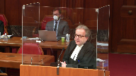
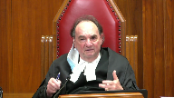

Corey Daniel Ramelson v. His Majesty The King; Erhard Haniffa v. His Majesty The King; Temitope Dare v. His Majesty The King; Muhammad Abbas Jaffer v. His Majesty The King
This transcript was made with automated artificial intelligence models and its accuracy has not been verified. Review the original webcast here.
Justice Wagner (00:00:03): Good morning, please be seated.
In the case of Cory Daniel Ramoson against Her Majesty the Queen, and between Erard Anifa against Her Majesty the Queen, and between Temitope Dare against Her Majesty the Queen, and Muhammad Abbas Jaffer against Her Majesty the Queen, for the appellant Cory Daniel Ramoson, Richard Litkovsky, and Miles Anivich, for the appellant Erard Anifa, Boris Bytensky, for the appellant Muhammad Abbas Jaffer, Brina Van de Beek, and Usain Ali, Mr. Temitope Dare for himself, for the respondent Her Majesty the Queen, Lisa Feinberg, and Cathy Doherty, for the intervener Director of Public Prosecutions, David Quayette, and Chris Greenwood, for the intervener Criminal Lawyers Association of Ontario, Michael Lacey, and Brian Badali, for the intervener British Columbia Civil Liberties Association, Mr. Gerald Chan, and Spencer Bass, for the intervener Canadian Civil Liberties Association, Danielle Dlatte, and Catherine Fan.
Mr. Litkovsky.
I just want to make sure also that everybody understand that Justice Sheila Martin is participating online.
Justice Wagner (00:02:28): Yes, sir.
Speaker 1 (00:02:36): following manner.
I will begin with about 20 minutes of submissions.
Mr. Bytensky will then proceed from that point on and then Ms. Van de Beek will conclude with the remaining time left to the appellants.
I want to begin my submissions first by focusing on the specific facts and scenario that Mr. Ramelson found himself in and then speak about some broader issues relating to the definition of virtual space and how that interrelates with random virtue testing.
And then Mr. Bytensky hopefully will be able to pick up from there.
In my respectful submission, the trial judge in this matter Justice de Saas, an experienced trial judge, familiar with the rules of entrapment, specifically in the area of dilatope, correctly modified his original entrapment ruling on the second application.
He did not, as the Crown below suggested, err by actually adding an extra step to the entrapment analysis.
That’s what the Crown argued below and this in the Court of Appeal for Ontario expressly at paragraph 90 and following of its decision rejected that argument.
In my condensed book I briefly set out the relevant passages of Justice de Saas’ decision on the second entrapment application and you’ll see that at tab one beginning at page one.
When I say Justice de Saas did, and this will help inform the rest of the appellant submissions, is take into account what this court said, especially the majority of this court said in Ahmed and Williams when it comes to defining virtual space for the purposes of the entrapment analysis.
What Justice de Saas did was take and build on the jurisprudence of this court in Ahmed and Williams.
Ahmed and Williams, as you will recall, although made comments with respect to virtual space, was really about a more traditional form of virtual space, a phone call between two conversants.
What we have in these appeals is something much qualitatively and quantitatively different in scope.
What Justice de Saas did, and this is informed by the colloquy he had with the Crown which is also in the condensed book, he found at the end of the day there was simply this was an area that was simply too broad and too vaguely defined for the purposes of a bona fide investigation.
The reason he then went on to parse the conversation and chat between my client and the undercover police officer was to then address the second part of branch one of the entrapment test.
So what he was doing was I found that there’s no bona fide inquiry.
What I’m going to do next and what I have to do next is, of course, examine the conversation to see whether the officer consistent with Williams in the course of the conversation actually created or found a reasonable suspicion to believe that Mr. Ramoson was engaged in criminal activity.
Those are the two parts of branch one of entrapment.
Those are the two parts that Justice de Saas decided, and to the extent that this Court of Appeal agreed with him, I adopt what the Court of Appeal said.
Now, unfortunately that’s where my agreement with the Court of Appeal for Ontario ends.
And now I’m going to sort of shift a bit to discuss why we as the appellants jointly say that the Court of Appeal went astray in not following some of the comments of this court in Ahmed and Williams.
Ahmed and Williams presented this court with the first real opportunity to address issues of virtual space beyond, as I said, a phone call.
Now, in our respectful submission it behooves this court to pick up on the language of Ahmed and Williams because a failure to define the scope of virtual space and the bounds of a bona fide inquiry permits ultimately an overly broad and unlimited scope, which would be contrary to the carefully established principles of entrapment that began in Mac and Barnes from this court.
One of the most important principles flowing from Ahmed is that a reasonable suspicion, whether spotlighting an individual or an area, must be focused, precise, and based on objective facts that stand up to independent scrutiny.
That’s a crucial passage from Ahmed in paragraph 46 of this court’s decision.
A virtual space that is too broad cannot support a sufficiently reasonable suspicion.
I hearken back to Barnes because in Barnes, as you recall, the Supreme Court primarily was grappling with the bona fide inquiry issue.
And in Barnes, Chief Justice LeMayor commented as follows, and this is I believe at page 462 of Barnes, the reported decision.
He commented as follows on when an inquiry or an investigation would not be bona fide.
He said and I quote, I note in many cases the size of the area itself may indicate that the investigation is not bona fide.
This will be particularly so when there are grounds for believing that the criminal activity being investigated is concentrated in part of a larger area targeted by the police.
Justice Brown (00:08:33): are all physical descriptions, breadth, large area, and I’m wondering how we translate those terms or whether there’s a metaphor or whether they’re even applicable at all when we get into the virtual space because, of course, you know, the web is worldwide, we condense in little bits here and there, websites, web pages, how do we go about doing that, applying those kinds of terms, if at all, in this kind of a case.
Speaker 1 (00:09:09): Thank you for that question.

You do that by beginning to properly identify just how different qualitatively and quantitatively is virtual space from the other more traditional physical spaces.
If we look at just the numbers in this case, for example, and this is why objectively discernible facts are important and there were very few in this case, really, except police experience.
For example, in this case there was a production order that showed that in a two-week period there were about 17,000 lines of text exchanged between undercover officers and the people who were tapped into this website.
One of the ways of perhaps of looking at it is how many people are actually accessing the website on a daily basis.
We know the statistics on that.
How many people are responding to the ads on a daily, weekly or monthly basis?
Is it an international scope?
Is it more local?
In this case it involved York Region and more of the greater Toronto area.
We know that literally thousands of people were accessing this website and courts, all the courts below have found that the majority, the vast majority of those people and the chief architect, the Frank Lloyd Wright, if I can put it that way, of this project, inspector Trong, agreed and acknowledged that the vast majority of people going on this site were not looking for the target of their investigation.
What is the site?
What site?
What is precisely?
It’s the escort section of what used to be the back page website.
But now and then you go there and that’s where you see the headline.
You don’t see the ad, you see a headline.
Justice Brown (00:11:01): You
Overlapping speakers (00:11:01): He’s
Justice Brown (00:11:01): see a title or whatever, a headline, you click on that, do we know how many people went into that?
If we have an ad for whoever, do we know how many people clicked on to that?
Speaker 1 (00:11:12): I don’t think there was evidence in this particular case of how many specific numbers of people were involved in this particular case of how many specific numbers of people were involved
Overlapping speakers (00:11:17): That would that not be the location the ad
Speaker 1 (00:11:20): Well, with respect, I would say that the location is the escort section.
Overlapping speakers (00:11:29): Why?
Speaker 1 (00:11:29): because the police because in defining the precise that’s because that’s first of all how the police identified where they were going to place the ads they determined that the escort section of back pages was a location where trafficking of underage girls mainly girls was it was occurring they selected that particular part of the back page website
Justice Moldaver (00:11:55): But they added to that particular wording, that sort of narrowed it down to young, fresh, etc. Which would distinguish it, I would have thought, from many, many, many of the ads, in fact, if not most of the ads that were published there.
Speaker 1 (00:12:13): I would respond to that by saying that inspector’s evidence was that there was not coded language that would directly address only those people who were looking for underage young people on the website.
Justice Moldaver (00:12:30): What kind of a code do you need?
Well, young, you know. Whatever.
Speaker 1 (00:12:35): Well, I cross-examined the addictive cook on that issue and I put to him from the so-called playbook of how they were supposed to do things, many of the ads or some of the ads would contain things like, oh, I can’t, I have to meet you
but I can only do it after school when my classes end.
You’ll have to set up the hotel room because I’m not old enough to do that.
Things like that, sending a clear signal to the person before the opportunity is given to appreciate that there was a reasonable chance that this person they were conversing with was not of age.
So there are, in the record, there is an examination and cross-examination precisely on those points and what could have been said.
Can I bring you back to why ‑‑ Yes.
Justice Brown (00:13:23): I’m I’m still struggling with why the ad itself is not the location because it is only once somebody has clicked on to the ad That the opportunity is presented
Speaker 1 (00:13:34): Well, the opportunities could be presented at various points in time, as we’ve seen in my client’s particular case, it was presented about 28 minutes into the conversation.
But he’s into the ad at that point.
Justice Brown (00:13:45): it’s not the the opportunity isn’t the the presentation of the title they click on the title and then the opportunities presented at that point they’re in the ad.
Why is that not the location?
Speaker 1 (00:13:55): I would submit that as I understand the juris prudence of this court with respect to presenting an opportunity, the opportunity is presented in this case at the moment that the issue of age was introduced into the equation.
The opportunity did not take place or was not made when somebody clicked on the ad because somebody clicking on the ad is doing something perfectly lawful in the sense of…
Justice Brown (00:14:18): But the clicking on the ad, it brings them into, like, the clicking on the title brings them into the advertisement.
Right, okay.
And it’s there that the conversation begins.
Let’s assume, sorry.
No, go ahead.
Speaker 1 (00:14:29): Let’s assume that scenario is accurate or correct or a valid way of interpreting it.
If the ad itself and the clicking on the ad itself is the defined area, then it clearly fails because the ad itself, everyone agrees, does not speak to a person who is looking for an underage girl.
It speaks to a person who wants to converse with a sex trade worker who is perfectly entitled to put these ads on.
Overlapping speakers (00:14:58): But I’m talking about reasonable suspicion over the location, not the person.
Speaker 1 (00:15:01): I ask rhetorically, at that point if the ad is the location, what is the reasonable suspicion in respect of that ad?
Justice Kasirer (00:15:08): If you look at if you look at just a follow-up on my colleagues question if you look at officer trongs evidence
He’s speaking exactly to the point that my colleague is making when he was asked Why do you use those expressions in the ad the young? fresh
And so for brand new and so forth his answer because I wanted to draw in the individuals that were searching for prostituted children, right like he like he’s target.
This is targeted.
This is part of the The target and that he said that what was being advert prostituted children that are being advertised on the back page Oftentimes
it’s coded language.
So this was this was this was part of a design.
Was it not surely this is This is for to help us with the location surely.
This is that the ad is a key feature of it. No
Speaker 1 (00:16:06): Let me answer that question by suggesting that what you’ve just cited from inspector truong’s evidence and detective cook’s evidence who testified in my case or my trial is experiential.

And this goes back to what I said at the outset about reasonable suspicion having to be defined in a way that can be subjected to curial review, that this court can independently look at what is the basis of this officer’s belief or suspicion that this location, whether it’s the ad or the section of the website, contains people who actively want to pursue young underage people in prostitution.
And looking at it from that perspective, and I don’t think there’s any debate about this, there was simply in my respect with submission no objectively discernible facts, nothing that this court can look at except inspector truong saying in my experience, as Mr. Bytensky points out in his factum, no statistics, no studies, no hard numbers were presented to any court in any of these appeals to establish the reasonable suspicion standard based on objectively discernible facts.
You have to be very careful in my respect with submission and I’ll segue a bit to an argument about objective discernible facts because there’s a history of jurisprudence in various areas including search and seizure law and detention law, including an earlier case from justice Dorothy in the court of appeal called Simpson where the very reason we have and demand police officers to use objective standards that can be double checked and reviewed by courts is because of the very danger that if it’s based only on personal experience and anecdotal evidence, that could lead to discriminatory practices in how police investigate crimes.
Justice Martin (00:17:59): May I ask this question please though in relation to the Barnes case are there any more discernible objective facts in Barnes than are present here because it seems to me there wasn’t hard numbers there wasn’t statistics or that that allowed the court in Barnes to talk about a specified place.
Speaker 1 (00:18:22): But in barns you had, again, I think the distinction between a physical location and a virtual space.
As Justice Brown pointed out, it becomes a much more delicate process of defining what a virtual space is versus in barns where I think it was like a 50 block radius, I can’t remember what it was, or a smaller radius and grand.
Overlapping speakers (00:18:46): There were six blocks.
Six blocks.
Speaker 1 (00:18:48): not 50 blocks.
That would have been perhaps a two larger space.
It was a six blocks radius in Barnes.
But that precisely, Justice Martin, and I’m sorry I lost track of where you were there for a moment.
I didn’t see you.
In response to you, Justice Martin, that question you raised precisely points out the difficulties of simply trying to translate a traditional Mac Barnes and even analysis to the analysis that has to take place on virtual space.
And the danger of and I’ll just end with this because I know my time is running out.
I want Mr. Bytensky to have a full opportunity to pick up on some more specific points.
But the danger of not precisely narrowly defining the virtual space is interrelated to the issue of random virtue testing.
Because the ability of the police to interact with so many people in so little time risks targeting and random virtue testing marginalized and innocent communities.
Mr. Lekowski, even if we can I ask this over here?
Sorry, Justice.
Can I ask?
Justice Jamal (00:20:00): this even if the location is the escort section of back page rather than the specific ad and getting into the wording of the ad to define the location even if it’s that portion of the website why wouldn’t that be the basis for a specific location and about proper bona fide inquiry under armored and under Mac in light of officer trunks evidence and it wasn’t anecdotal this was extensive evidence about the prevalence of child prostitution on the escort section of back page why wouldn’t that be sufficient to meet the standard for a bona fide inquiry

Speaker 1 (00:20:43): Well, because justice Jamal and I don’t want to quibble with the word anecdotal, it was experiential if I can use a more neutral term or perhaps less pejorative term.

It was not based on statistics.
It was not based on hard numbers.
It was based on him reciting what you just said, but there was no backup for that.
He was asked that by Mr. Bytensky.
Do you have any actual data?
Do you have any actual statistics?
And he said no.
And he went even further and agreed a, that the vast majority of people who go on the escort section of back pages are people looking for adult sex trade workers, and secondly, he also agreed and even the Court of Appeal for Ontario agreed that the vast majority of people who are even confronted with the opportunity once the age is introduced, the vast majority also resiled and did not take the bait, so to speak.
Inaudible.
Speaker 1 (00:22:04): Well, I would say that with respect to the Barnes analogy I think you can only take it so far and I’ll end on this because I’m at 20 minutes and I’ll try to complete my answer to your question, Justice Jamal.
The problem with the Barnes scenario is, for example, in Barnes an officer cannot go up to six different people at the same time and make an offer.
In the virtual world, detective cook was sitting in his hotel room and when I was cross-examining him you’ll see in the record he was saying he had like eight or ten conversations going on at once.
It’s the scope.
One officer going up to each individual person in the Granville Mall area in a six block radius can only do so much in so much time.
The problem that comes into random virtual testing is you’ve got cook or tron sitting in a room conversing with ten people at the same time perhaps more and more during the course of the hour.
Justice Brown (00:22:55): But in accordance with what we said in Ahmed, why does that matter?
Ahmed makes clear, and Mac makes clear, if there is reasonable suspicion over a location, an opportunity can be offered to anyone.
Speaker 1 (00:23:06): But my point is, and I think the appellants jointly would submit to you, that the evidentiary basis for establishing that there was reasonable suspicion in this location fell far short.
Because of the evidence about how many people actually were.
Justice Brown (00:23:20): That’s a different point than, well, you can’t offer 10 at a time online as opposed to one at a time.
Speaker 1 (00:23:26): It’s a way of perhaps characterizing why virtual space is so more insidious in terms of the ability of the police to target a very larger, much larger number of people than you would in the physical confines of a grand mall.
And finally on this point, you talk about the deep web and other websites.
I put into my materials something I put in before the Court of Appeal for Ontario and they decided in their own wisdom not to address my arguments on this, but the article by the two academics which did an empirical study and is the only one I’m familiar with thus far, project Raphael, suggests that the people that these kinds of projects and proactive luring investigations are targeting are simply not being caught by these kinds of projects.
They submit that other aspects of police investigation like a vice probe that’s referred to and in the Court of Appeal judgment would be better or at least using perhaps these kinds of proactive investigative techniques as a first step to then identify a pool of people and then do proper investigations of those individuals.
I highly commend that article.
I thoroughly reviewed it in my factum and I suggest that it can inform the value of this kind of project because a couple of the factors ‑‑ sorry, miscarriage of sentence.
Overlapping speakers (00:24:53): No, finish your answer.
Speaker 1 (00:24:54): A couple of the items that the court noted are the seriousness of the offense being investigated and the availability of other techniques.
Nobody will, it’s gain said that this is obviously a serious issue, juvenile prostitution, especially those who traffic in juvenile people.
But if you’re examining legality of a system or a project that in fact, according to the best evidence we have, simply does not achieve assisting the targets of the project, the young girls, as those two authors suggest, and they work in the field of assisting youth, vulnerable youth.
They say it’s not proper.
So when you do have, and no system is great obviously, unfortunately, but when you have two systems, one that does not infringe privacy rights and does not random virtue test, and another one which does, but as well does not meet its objective, it seems quite clear in my respectful submission that there’s something wrong with a conclusion that this space was narrowly precisely defined.
Justice Karakatsanis (00:26:06): So I’m just going to ask you because in Ahmed we did set out a number of factors that would assist and not all of those factors simply go to whether there’s reasonable suspicion.
It also goes to the nature of the investigation, whether it’s bona fide
and what are the actual investigative techniques engaged.
So my question really is how do those two things work together in the virtual context?
We’re all struggling how qualitatively it’s different.
So how do you approach it in a way that respects the underlying principles and applies those principles when you’re talking about an online space but also talking about a particular investigative technique?
And I guess the focus has been well where’s the reasonable suspicion on the space but isn’t it both?
Isn’t it what space are you targeting and is it and how is it defined and what is the investigative technique that’s involved and both of those together are necessary to determine whether it’s sufficiently constrained.
So I just wanted to get your views on how those two work together in a virtual space.
Speaker 1 (00:27:23): If I’m understanding your question, my apologies, it might be trending towards the interpretation of what the crown thought justice was doing in the first, in the second entrapment application.
No, that’s not the question.
Justice Karakatsanis (00:27:43): No, I’m still focused on the space and whether there is, this is not individual suspicion over the individual.
We’re not talking about that branch of entrapment.
We’re talking about what was called the bona fide investigation and Ahmed says that includes reasonable suspicion over a constrained space, a clearly defined space.
So those two are two components.
The bona fide investigation has investigative techniques that are particularly tailored in relation to an online space and there’s reasonable suspicion.
How do they work together in a virtual context?
Speaker 1 (00:28:22): Well, in this virtual context, the only connection would be, as Justice Brown pointed out at the beginning of our discussion, the ad itself.
That’s the connecting feature.
Overlapping speakers (00:28:32): Exactly.
Speaker 1 (00:28:32): So, but again, and I’ll just end with this, I know I said I’m going to end with this now four times, and I do want to give my colleagues as much time as they want to make their submissions.
But the ad itself, I would respectfully submit on all fours, doesn’t advance the investigative technique and target the group to a level sufficient to make this a bona fide inquiry.
And they’re somewhat constrained by what they can say on these ads.
Because as justice Jamal pointed out inherently or implicitly in his question to me, these are not deep websites.
These are sites that are traditionally and historically been used by adult sex trade workers to lawfully offer their services to people who are watching those ads.
So in this context I would say in this virtual space those ads in this case, in Mr. Ramelson’s case, certainly did not bridge the gap between the definition of the space and it being properly targeted.
Those are my respectful submissions, if Mr. Bytensky wants to pick up from there.
Speaker 2 (00:29:46): Chief Justice, justices, I’m going to try to pick up on the answer to Justice Brown to your question.
Because many of the questions that have been asked of Mr. Likowski are overlapping.
And respectfully in terms of how we define the space and why is the space the Toronto back pages as opposed to the specific ad.
And respectfully my answer to that is we have to go back to why when we are dealing with the physical world why this court sought to ensure that physical spaces were narrowly defined in the first place.
And that is the reason why that occurred is because you want to ensure that innocent persons aren’t unduly targeted.
In other words that when you talk about a reasonable suspicion those words have some meaning beyond the mere possibility.
And in my factum I use the example as a matter of logic if you believe that drug dealing is occurring in a particular building stairwell you necessarily also believe or suspect that some drug dealing is occurring within that same province because it’s part of a larger sample size.
So when we insisted when this court insisted on a narrowly defined physical space it was to by inference to ensure that there was a sufficient prevalence of the activity that’s targeted that was suspected to be occurring in that space.
And so Justice Karygiannis to answer your question when we talk about the factors I respectfully submit to you that there was one factor that you didn’t mention in the case because it wasn’t relevant to that discussion at least not to the specific facts of those cases.
And it’s something that I comment on in my written submissions and respectfully the factor of prevalence has to have some meaning.
It is currently okay to say by a police officer, leaving aside whether it’s objectively justifiable or not it’s a separate issue which I’ll come to if I have time, but a police officer can say I reasonably suspect that this criminal activity is happening on back pages.
And that could mean that I reasonably suspect that one person a year is targeting children on back pages or it could mean that one person an hour is doing it.
Because the words used to express your suspicion are the same.
And with the greatest of respect given what’s at stake in the virtual world and given the enormous privacy costs that we pay by allowing randomly selected individuals to be targeted in a virtual space, I respectfully submit that one factor has to be and the factor that brings everything together is the suspected prevalence.
And do you need hard facts and data?
Maybe not, but it would help.
And when we talk about barns, we didn’t know the exact number of people in the mall.
We didn’t know the exact percentage
but we did know that some, I think the number was 30 or 40% of all drug trafficking in Vancouver for the year arose from Granville Mall.
That was a figure that was before the court in the record and was significantly relied upon.
So the bottom line is whether you express it in real numbers or just in terms of relative terms, there has to be some finding which a court on a careful and meaningful review can make that the prevalence of the activity is sufficiently high to justify the costs that come with the flip side of providing opportunities in a private space.
Justice Côté (00:33:36): So is it not what the trial judge, Justice Edessa, did in paragraph 24 of his second decision, when he said that while juvenile prostitution was clearly occurring on the website, that website was not a place dedicated to underage prostitution?
And then he continued in saying that the evidence indicates that even within the escort section, the overwhelming majority of ads and traffic did not relate to men seeking sexual services from underage girls.
So is it not an application of this factor of prevalence that Justice Edessa did?
Speaker 2 (00:34:21): Well, justice D’Souza certainly did that to some extent.
He relied on the information that was in the record before him.
And you know, I just paused to note that justice D’Souza before appellants is the only one that considered the entrapment hearing post this court’s release in Ahmad.
So all the other appellants including in my particular case with my client, those analyses were done on the state of the law as they existed before Ahmad.
So none of these factors were in fact, I made specific attempts to reopen the entrapment hearing to argue the privacy rights of others, the violations, the very factors that this court identified.
And the trial judge in my case said you couldn’t do that.
Those were irrelevant.
So prevalence didn’t matter to him.
But yes, I agree with you, justice Cote, that that was a factor.
And I was going to, if I may, I’m sorry, I’m not sure if I’ve answered your question, but I agree with you.
That is exactly what justice D’Souza has done by inference and I submit to all of you that that is the correct approach to take.
It should be part of the analysis.
And I just want to use that to segue when we talk about experience.
Mr. Likowski talked about experiential, the court of appeal in the decision refers to just inspector tron’s experience in this area.
But experience isn’t limited to a focus on what is conveniently in support of your position.
Experience has to take into account all the facts that are known or believed to the officer or suspected.
We know that from all the reasonable suspicion cases from this court that you can’t ignore, you can’t cherry pick the facts that help you.
But in this particular case, this was a longstanding project.
And here justice Cote, I come back to justice Cote’s observation.
Officer tron, maybe not in the very first phase of the project, but certainly in all the latter phases, would have had the experience of the projects themselves when designing future ads.
So when you we don’t know the actual numbers for phase one.
The only numbers we have are from the production order which came out of phase three out of five phases that were involved in the overall length of this investigation.
But what we do know is that over 1,000 individuals, discrete individuals responded to the ads in a 7-day period in March of 2016.
That is in the record, that is in a sealed exhibit.
Every one of those numbers is known.
If the police want to track down every single individual, they have that information now.
So over 7 days, 1,000, over 1,000 unique individuals responded generating over 17,000 lines of text and only 53 of them were arrested.
So approximately 5%.
95% of the people that responded were not interested and did not engage for whatever reasons.
And of the 53 that did, it is an absolutely open question about whether any of them were interested in juveniles to begin with.
Yes, they all failed the virtue test.
They all took up the opportunity when it was presented to them.
But that does not logically equate to the suggestion that each and every one of them or even a single one of them was attending that back page website or clicking on that ad because they were looking for a juvenile.
They failed the test.
But that doesn’t mean they had the intention.
And there is, it’s very telling in my respectful submission that not one from what we could observe of the 1,000 responders that we have the text communications for said in response to the ad, by the way, I’m hoping you’re under 18, or gave any other indication prior to the opportunity being presented to suggest that they were in fact looking for somebody underage.
Justice Brown (00:38:01): I take it then you don’t find the Court of Appeals answer on that point persuasive, right?
And I think this was the trial judge in the DARE case as well, that individuals who are indifferent to the age of their escorts when responding to an offer were legitimate targets according to the Court of Appeal because that indifference would manifest itself in real life encounters thus contributing to the market for child prostitution.
Speaker 2 (00:38:29): It’s a very difficult question, Justice Brown.
The short answer is no, I don’t agree with the Court of Appeal because in Morrison this court said for very similar language that the mens rea required for a luring offence is intention or willful blindness, not recklessness, and recklessness would not be sufficient.
So when you turn it around into a reasonable suspicion type of analysis, remember, the whole analysis starts with a finding that the police have to have a reasonable suspicion that the criminal activity is occurring in a specific place.
The Court of Appeal finally agreed with this argument that had been rejected at the trial level in my case.
Child prostitution is a scourge.
It is a social ill.
It is despicable and disgraceful and every single Canadian should be horrified by it.
But it is not the same as saying that every man who engages with a child prostitute was looking for one and was intending to commit that offence.
Justice Brown (00:39:28): Okay, but let’s go back to Barnes, right?
Not everyone in Granville Mall is a drug trafficker. Agreed.
Right?
I mean, there’s the Hudson’s Bay Company, there’s movie theatres, there’s a concert hall. Agreed.
Right.
And yet the court was not concerned, having decided that the police were investigating, were part of, you know, engaged in a bona fide investigation based on reasonable suspicion about the location, that the police may have offered opportunities to people who absent that opportunity would not have had the intention of buying drugs.
Speaker 2 (00:39:56): I agree.
And the key is prevalence.
Whether expressed that way or not, the key is ultimately ‑‑ well, there’s two keys.
One is prevalence.
So the courts starting from the trial level all the way to this court in Barnes were ultimately satisfied that there was sufficient prevalence of the criminal activity at that location to justify the infringement of the potential rights of the innocents that would have been targeted that presumably would have had no ability or no interest in taking up the police on their opportunity.
But what’s also different and respectfully this is where the virtual world creates so many difficulties and I respectfully submit creates so many opportunities for this court to provide guidance is the cost of an innocent person being approached at Granville mall in the physical world is a much smaller societal price to pay than the cost of the innocents who are targeted and preserved here.
We ‑‑ I use this in the concluding portion of my fact and I stand by it and I respectfully urge you to agree and take some interest in the fact that this is virtual carding of a very large scale.
When the police provide this opportunity, every single person, all 1,000 plus people in seven days, so if you can extrapolate that over the five phases of project Raphael, you have thousands of people, every one of those people is either in a police database now ‑‑ every one of their numbers, excuse me, every one of those numbers is now in a police database outed as somebody who is seeking an adult prostitute.
That may not be the same as somebody seeking a child prostitute but I suspect most Canadians that were looking for adult prostitutes between 2014 and 2018 would not want the police to know that, would not want to share their interest in hiring an adult prostitute with the state and yet every one of those numbers from one phase has been preserved in a production order and it would not take much for the police to obtain production orders for the other phases and by the way, I should add that in Mr. Jaffer’s case, for Mr. Jaffer’s phase, he was in the first phase of the project.
For that phase, the police ads specified replies either by text or by e‑mail and you have a copy of those ads that are in the record for Mr. Jaffer.
So anybody who replied by e‑mail, that record also lives on forever and that provides an additional source of information for the police.
So they have carded all of these individuals virtually and you can foresee future projects where they might be able to access and cross reference with other police databases and sources to gather all sorts of information about the general public that have no interest in the crime that you are actually investigating that you are suspecting.
Now, that may be a price worth paying.
I’m not here to tell you that there can never be a time where that price isn’t worth paying because some offenses are too prevalent or too serious or some combination of those factors, but you have to take those factors into account.
Overlapping speakers (00:43:16): What’s the threshold for prevalence?
5% you’ve said isn’t enough.
What is the threshold for prevalence?
Speaker 2 (00:43:21): That’s the threshold in this case that we have demonstrated for people who took up the opportunity, Justice Germont.
We don’t know what the prevalence is of people who are intentionally looking for juveniles and that is in my respectful submission the standard the police have to meet.
When they set out their project, when they define it, this court has said in other courts, this court said previously that the targeted activity has to be the one that you suspect is occurring at that location.
Justice Brown, this is a long way to answer your original question about what the ad is.
The police throughout say we suspect that this activity is occurring on back page.
It’s not occurring at this ad.
It’s occurring on back pages.
It’s occurring on the Toronto escorts section of back pages.
I have in my condensed book, I put the ads in, the two ads that were used in Mr. Hanifah’s case and I included them in my condensed book.
In fact, not only is it the Toronto section of back pages within the ad, and this is a tabs or tab rather 2a of my condensed book if you wish to look at now or later, but the location that’s targeted is there were two separate ads but one says Brampton City of Toronto, Mississauga, Oakville, Toronto, young highway 7, York Region and in the second ad it said Brampton City of Toronto, highway 7 and highway 27, Mississauga, Oakville, Toronto, York Region.
This is a York Regional Police Force investigation supposedly targeting juvenile prostitution activity in York Region yet their ads are targeted to users that would put in search terms such as Brampton City of Toronto, Mississauga, Oakville and so on.
That’s the GTA, that’s not York Region.
That’s, I don’t know, 5, 6, 7 million people who live in those areas.
In my respectful submission, this is a very broad investigation.
You can see the footer on the ads that talks about where the ad is housed, Toronto.backpage.com and female escorts and so on.
In my respectful submission, it’s a very broad targeting and it’s not 5%.
It’s 5% who failed the virtue test.
So if I can respond to your question originally you asked Mr. Latkowski about the words were targeted.
I think if you were to look at the transcripts of officer Trong’s testimony in the different cases he uses different expressions.
I don’t believe that the portion you quoted from in your original quote is exactly the same as he testified in all the cases because he was cross examined different times.
It’s not like every council here had an opportunity to cross them within the same proceeding at the same time.
The evidence emerged slightly differently I believe between the cases although the record from the Hanifa case, my case was used and filed, the transcripts were filed in some of the later cases I believe both for Mr. Dari and Mr. Ramelson.
But when I cross examined inspector Trong and I believe Mr. Ali when he cross examined in the Jaffer case, in both occasions, officer Trong confirmed that the words that were selected were not designed, they were not code for underage.
I appreciate, you know, Justice Brown, Justice Cassidy, you both said the same thing in terms of he said that these words were intent, he thought that they might signal to somebody that this could be somebody younger.
And younger is a really nonspecific term as well because younger at least for me anyways is somebody a lot older than 18.
But at the end of the day, when he says, and he says this directly in my quote, the semi-condensed book, I was intending for the words that I used in my ads to look like other ads that were in the back pages escort section.
I didn’t want it to stick out like a police ad.
I wanted people to think this was just another ad.
And he agreed also that there was no known code for underage.
And as I said, it makes perfect sense because if there was a code, the pimps who prostitute these young juveniles would be caught.
Because if you put words that signify, look, I have an underage girl here, you’re inviting the police to come and rage you or to otherwise to take investigative steps which is bad for your business.
So they don’t use code.
And here is where I respectfully submit the threshold of reasonable suspicion has to have some teeth.
When this court says in Ahmad at paragraph 30 that you have to, excuse me, you need objectively discernible facts and not simply deference to police stated suspicions.
That’s your words paragraph 30 of Ahmad and earlier cases such as Chahil and so on where this court repeatedly speaks about the need for exact and curial scrutiny, all we have here is the officer saying I believe men were going to back page to intentionally find girls.
And he says it as part of an answer.
You have to read the entire answer.
In fairness, in fairness I’m over here.
Thank you for your attention.
Justice Kasirer (00:49:04): In fairness, in your case, he spoke of children.
Overlapping speakers (00:49:10): Yes.
Young girls or children.
Justice Kasirer (00:49:13): Yes.
Prostituted children.
That was his, when he was asked specifically, why did you pick those words?
That’s right.
He wasn’t just, it wasn’t just an appeal to youth in some kind of non-specific way.
It was speaking to prostituted children on the basis of his training and years of experience.
We’re to ignore that.
Speaker 2 (00:49:41): No, you’re not, but you need to look at it with the exact and curial scrutiny that prior cases have required and I respectfully submit that that didn’t happen.
This was ultimately an experience, as I said, it’s more than just saying I’ve done this for a long time.
Officer Trong spoke to many prostitutes, he dealt with many prostitutes, he spoke with many community agencies, he listed all the people that he spoke with as part of gaining his experience and the court of appeal repeated every one of them, but the one group of people that he didn’t speak to that’s not on that list is consumers of prostitutes.
He didn’t say I interviewed hundreds of people that were so-called johns, that were so-called consumers, and they tell me that they go to back pages to find underage girls.
There is none of that.
What there is, I accept that he says that he picked those words because he thought that they might be appealing to somebody.
He did say that.
Those words came out of his mouth.
Earlier he says I believe that people are going to back page to try to find underage girls.
He says that because, I mean, it’s part of a large answer where he’s asked in chief and this is in the Hanifa case
and I put it in my condensed book and in my factum where he’s asked why did you design the project this way and he goes on to list, well, I knew there were people going to back pages to look for adults and I knew that there were people going to back pages to look for adults, but if they got kids, they might pursue that, and then I knew that there were some people that were going to back pages to look for adults that wouldn’t pursue kids
and then I knew that there were some people that were going to back pages that were looking for kids.
He listed all the logical possibilities of anybody who was going to back pages might have.
He didn’t say one was more prevalent than the other.
He didn’t say that in my experience this is what happens.
He simply listed all the possible possibilities and within them, one of them is something to say that some men were going there to look for children.
So this is where the need for some objectivity comes in.
When the only foundation and the court of appeal quotes this line in saying he suspected that men were going there, when the only foundation is part of a longer answer which lists all the logical possibilities and when he’s directly asked do you have statistics, not just him, you go to lots of conferences, do you ever hear statistics presented at these conferences?
Does anybody else tell you any of these things?
And he continually says no, no, no, no, no.
He doesn’t have anything.
And respectfully, when you take it with the objective evidence about how few people actually responded and finally, and I submit to you also a very relevant consideration which the court of appeal I submit didn’t get right is I ask rhetorically, I’ve asked rhetorically at the court of appeal, I ask rhetorically again if somebody was interested in finding a juvenile on back pages, how would you find one?
We have statistics.
The statistics are there.
The statistics are in the condensed book, at least the statistics to the extent that officer believe them to be accurate and even put them in his own expert report.
So if these statistics are accurate, you would have to randomly pick ads once for like every day for like six years before you actually got an actual juvenile based on the numbers that I came up with.
Justice Brown (00:53:20): So you say they can’t get around this by using a code, you say, because there’s no code for identifying juveniles on Backpage because the people who place those ads would be quickly caught.
One of the considerations that we identified in Ahmed was whether there’s a less intrusive way of doing this.
So how else could the police design the ads to limit the target audience?
Speaker 2 (00:53:55): So the first part of my answer is that some places are simply too wide to be properly defined.
It may be that you can’t and that’s an acceptable answer with respect but if you’re asking me how could they have done it, they could have put a picture of a 14-year-old without it.
You know, you could have put a picture of a 14-year-old without it.
Overlapping speakers (00:54:13): a 14-year-old.
So change the picture and that would be enough?
Well I say no because I say the area is too wide to begin with. Right no
no
but but but let’s let’s put that aside.
Speaker 2 (00:54:22): Right.
If you disagree with me, the only evidence was that you in the ads it says posters age and says 18 and says the program wouldn’t accept anything below 18.
That’s the evidence.
What the officer also said and I put to him in my cross-examination, what if you just put I’m 15 in the body of the ad.
He said I never thought of that.
I don’t know what happened.
There’s no evidence that you can’t do that.
You might get flagged.
You might want to get back page to cooperate with you and say we’re doing this operation and we want you to cooperate.
I don’t know.
Maybe they would.
Put it right in the body of the ad so there is no dispute and there is no cat and mouse and bait and switch.
Put a picture of a 14-year-old whose face is turned the other way so that her privacy is not.
Don’t put a 30-year-old police officer in there.
Overlapping speakers (00:55:12): They’re 14-year-old for that photo.
Speaker 2 (00:55:14): you can get a stock image of lots of people I suspect online that are clearly children that are not identifiable.
In my respect for submission.
Justice Brown (00:55:21): Yeah, that sounds like you’re putting a giant red flag on saying, you know, BWAH! Police!
Speaker 2 (00:55:27): Well, yes, maybe.
But if you’re trying to actually get the people that are interested in that, then that’s got to be the way to do it, or…
Justice Brown (00:55:36): But you won’t, because you’ve just put a giant red flag on it.
Justice Kasirer (00:55:39): Can you explain to me why the giant red flag, I didn’t understand your answer about putting 15 in the body of the ad.
Didn’t you ask, didn’t you ask Detective Trong about putting, I think you actually used 16.
And you said, why didn’t you put that in?
And then didn’t he say, well, on the back page it would default and the person wouldn’t be able to proceed any further?
So he was kind of constrained by the back page, was that, have I got that wrong?
I mean, I remember there was also back and forth between the two of you about back page not respecting its own disclaimers.
And you know, you tried to say, well, you could always, why don’t you contact back page?
And then he said, well, you know, back page doesn’t respect its own rules.
I mean, you know, what was he supposed to do?
Speaker 2 (00:56:33): to do.
Back page is out of business now.
There’s going to be some other back page now that’s going to be in its place.
I believe I have it right
and I apologize if I don’t.
I’m also very mindful of my time.
I want to make sure Ms. Van de Beek has an opportunity to make some submissions.
Ultimately, the way I understood it is there’s a drop down menu where it says posters age.
That appears in the ad.
That’s the one you can’t go below 18.
The words that you choose, like when you write in the body ad whatever you write, the rates for the half hour and so on, you can write whatever you want.
It might set off some flags and it certainly would set off the giant big red flag to users that this could be a police officer.
I accept that.
But ultimately, my point is that if you put it in black and white like that, then you know you’re targeting the right audience.
The odds of finding an innocent person or having somebody who’s really not interested respond goes significantly down.
When that happens, the price we pay, the virtual price we pay that I’ve talked about is ameliorated because you don’t have to worry about all the costs on the other side of the ledger or the other side of the balance.
I can see it’s a very delicate situation.
We want to protect children, but vice probes are significantly more successful than going after random people that may or may not have ever had any intentions.
I apologize for taking the time.
Justice Moldaver (00:58:05): I thought there was a finding that the vice probe isn’t effective.
In fact, it’s terribly ineffective and that really, see, I’m listening to this.
And we’re in a day and age where, unfortunately, the internet is being used to a very large extent.
I think you started off your submission saying how terrible this crime is, how many juveniles are being engaged in sex trade.
And there’s all kinds of evidence here that they often are the ones that are destitute, marginalized, etc.
They’re being just, they’re just being used as pieces of property in effect.
So I’m hearing all this from you, how terrible this is.
But then I’m hearing from you, we gotta be worried about, because the people who got onto this and chose not to do this, their names will be in the police data bank.
Cuz if the police have nothing better to do, then start going after these thousands of people that you say didn’t take up the offer.
And I guess my point is this, we are in 2022.
This is a huge crime.
It’s a dangerous crime.
It’s happening on a regular and persistent basis.
The police can’t even try to keep on top of it.
But you’re standing there in effect saying, well, this wasn’t any good.
Because we can’t show that there were really a lot of people that were involved in this back page, or whatever, whatever.
You’re giving us all this stuff.
And I guess my real question to you, isn’t there a point in time where we have to give the police the tools they need constitutionally to try and deal with a horrific crime that is going on in a regular and persistent basis?
And if that means possibly interfering with someone’s privacy interests, and you create this example, the police will track down all these people, which I think is nonsense.
Maybe there’s a time that we have to say, you know what?
We gotta give them a little leeway.
Just like Chief Justice LeMayor gave leeway for the Granville Mall, six blocks, where there would have been tens of thousands of people going in that area every day, and he said, you know, you can pick any one of them, because there’s drug trafficking going on.
And let’s look at the drug trafficking that would have been going on there, that the police were looking for.
It wouldn’t have been pounds of cocaine, I don’t think.
They would have been approaching people to buy marijuana, or, you know, a few grams of cocaine, or whatever.
So how do we compare that with respect to the nature of this kind of crime?
You are effectively, it seems to me, trying to just bind the hands of the police from doing anything, even though they’ve tried to narrow this as much as possible.
Speaker 2 (01:01:02): Well, I don’t have much time, so I don’t have an ability to give a long answer, but…
Overlapping speakers (01:01:07): I don’t think you have enough time because you don’t have an answer.
Speaker 2 (01:01:11): Well, with respect all, there are many very serious crimes in our society that we choose to impose constitutional limits on the police for.
This is pretty much every crime involves a matter of balancing in terms of giving police powers whether they’re drug investigations or otherwise.
It’s a balancing exercise.
My submission is that the balancing should be conducted a certain way and certain factors should be taken into account.
Mrs. Moldaver, I don’t back away from the fact that juvenile prostitution is a very serious crime.
It’s committed primarily by pimps and people who aren’t targeted through this investigation.
If the goal is to save young girls, you’ll do more of them with respect by vice probes in the article that Mr. Likowski gave who says that.
Justice Moldaver (01:01:52): So the Court of Appeal got it wrong when they said that the vice probes, based on the evidence of the officers, doesn’t come anywhere close to being able to deal with this.
Speaker 2 (01:02:04): The Vice Probe, Justice Moldaver, took over 30 girls off the street.
There’s no evidence that a single girl has been spared as a result of the hundreds of arrests that have happened in Project Rafael.
Justice Moldaver (01:02:14): Well, that’s kind of an impossible thing to say because, you know, you’re trying to prove a negative, I guess.
It’s true.
Speaker 2 (01:02:21): But I’m not saying it, other authors have said it.
That’s, that’s, I’m repeating.
Justice Moldaver (01:02:27): If you’re willing to do it, you’re willing to do it.
There’s a lot of that here, oh, they didn’t intend this.
They didn’t, this wasn’t their purpose.
But if they’re willing to do it, they’ll find it, believe me.
Justice Wagner (01:02:41): All right, thank you.
Your time is up, but I will give you five minutes.
Speaker 3 (01:02:49): Thank you, chief justice.
So I only wanted to make two brief points that really relate to the factual circumstances of Mr. Jaffer.
Because what I say that Mr. Jaffer’s case in particular demonstrates that he is sort of an example of a person who was random virtue tested or who fell through the cracks if this court agrees with the court of appeals approach that there was sufficient reasonable suspicion.
And I say that because, you know, the facts of Jaffer are quite unique.
He’s 22 years old, which is, you know, not a big gap in the age range.
He’s no prior criminal record.
He’s a straight A student at the University of Toronto.
And I think the three, you know, important factors or the two most important fact or three, I would say, is that the records from the phone after that were discovered after the investigation showed that Mr. Jaffer was not looking to engage with a minor.
The postconviction fallometric testing proved that Mr. Jaffer was not interested in minors.
And so those and then there’s also this undiagnosed Asperger’s syndrome that’s playing around in the background.
And so what I say, Mr. Jaffer’s case, it’s just an illustrative example that if, you know, the suspicion is just based on the website and there’s nothing that’s asked about the individual, then a person like Mr. Jaffer who we know was not interested in minors and who wasn’t trolling the internet to, you know, find a minor escort to have sex with, he essentially falls through the cracks and it’s too bad, no remedy for him.
And I would say this sort of raises two problems that relate to the case law.
One, it endorses the police ability to manufacture crime because but for this ad, Mr. Jaffer would not have fallen, you know, into this situation that he’s in.
So but for the police investigation, he would not be in this situation.
And then two, to the extent that any vulnerabilities might have for Mr. Jaffer or for other people who end up on these sites, so other people who have difficulty forming relationships because of whatever, you know, it could be the Asperger syndrome or other personal backgrounds, those vulnerabilities are not considered in any aspect of the test because it’s considered from the police perspective.
So in my submission, his case just sort of shows an example of the problems that can happen when you’re in a virtual realm and we just delineate regional suspicion based on the location and not nothing related to the person.
The Crown says and I’m over here.
Justice Kasirer (01:05:42): says that your arguments on vulnerability fall flat because there’s nothing that objectively points to inducement in the case of Mr. Jafar.
So I’d like your thoughts on that.
And they also say that the mode of analysis suggested in Mack and the cases and Ahmed is to focus on the effect of the police conduct rather than the acute state of mind.
I’m just wondering where we’re supposed to fit Mr. Jafar’s vulnerabilities into the analysis.
Speaker 3 (01:06:17): And so that’s what I think this case the problem this case highlights because you know if you had considered if you know the Court of Appeal is correct that reasonable suspicion is just based on the place then on the second branch of Mac there is no space for Mr. Jaffer because the way the test is framed you know requires it to look at things that the police knew ahead of time and I don’t I’m not faulting the police they didn’t know they didn’t know that about anybody but that’s the risk that happens with the virtual realm because they didn’t engage in any you know pre-questioning in relation to Mr. Jaffer so I agree with the Crown that the test as it’s formatted now doesn’t consider these vulnerabilities
but I think that that’s a problem with virtual space and with this type of investigation so that’s exactly sort of my point.
Justice Jamal (01:07:12): Doesn’t it really suggest that it’s a mitigating factor in sentence, because we are concerned not with an absence of culpability, but with a remedy for abuse of process by the state.
It’s because that is the focus, because that is the nature of the remedy that is in issue.
So the individual’s mitigating circumstances really don’t go to whether the state misconduct, which is necessarily the focus of the test, may be relevant at another stage.
Speaker 3 (01:07:43): It may be relevant at the sentencing, but my submission would be is that if these vulnerabilities are sort of the driving factor about why there may be more prevalence of these types of people with these vulnerabilities on the website, then that would also go to this aspect of the test, or if it goes to, you know, why they were dealing with the police in this way, that would also go to whether or not there’s been an abusive process.
And I would just say, you know, the test right now is, you know, for I guess looking from the police perspective, but if at the end of the day it’s capturing a group of people that have vulnerabilities and we know about that in the end, how is society going to have confidence in that sort of system?
Justice Wagner (01:08:27): The Court will take its morning break, 15 minutes.
Thank you.
Please be seated.
Thank you, Ms. Doherty.
Speaker 4 (01:09:17): Good morning Chief Justice, Justices.
In the Respondent’s submission, the Court of Appeal got it right.
The appellants were not entrapped.
Applying the framework that this Court recently reaffirmed in a mod, the Court of Appeal concluded that the police in these cases had the requisite reasonable suspicion that the targeted criminal conduct was occurring in the defined location of investigative interest, the escort section of the adult subsection of Backpage.com.
They further did nothing that amounted to an improper inducement.
In our submissions this morning, I’m going to address you on the reasonable suspicion issues, in particular that the Court of Appeal did what this Court directed in our via mod to assess whether the police conduct amounted to a bona fide investigation.
There’s no real issue in my submission that the police were motivated by a legitimate investigative purpose, so I’ll focus my submissions on two points this morning.
First relates to the reasonable suspicion threshold, what’s required by it, what’s required to meet that standard in terms of material or evidence, and how that standard was met here.
Second, I’ll turn to the Court of Appeal’s consideration of the tailoring of the location of investigative interest and whether considering the mod factors the police technique avoided random virtue testing.
Subject to any questions on the inducement front, if there are any I’ll leave those to my colleague Ms. Feinberg to address at the end of our submissions.
The first issue, as I said, that I want to address the Court on relates to the Court of Appeal’s conclusion that the police here had the requisite reasonable suspicion that the targeted criminal conduct was occurring in the targeted location, the escort section of Backpage.
In terms of what a reasonable suspicion requires, in a mod this Court recently reaffirmed the application of the reasonable suspicion standard as the threshold to meet to avoid an entrapment finding.
Police must have a reasonable suspicion that a particular individual is engaged in the targeted criminal conduct or that the targeted criminal conduct is occurring in a specifically targeted area.
Reasonable suspicion is a robust standard, it’s not a mere hunch, and the appellate authorities have found that the standard requires something more than a mere suspicion and something less than a belief based on reasonable and probable grounds.
It’s assessed based on a consideration of the totality of the circumstances, based on objectively discernible facts, and is subject to independent and rigorous judicial scrutiny.
A majority of this Court commented on how well-suited this standard is to the entrapment inquiry in the majority’s decision in a mod.
The Court talks about in every context the reasonable suspicion standard ensures Courts can conduct meaningful judicial review of what Police knew at the time the opportunity was provided.
And further, the Court went on to rely on Justice Doherty’s decision in Simpson, where he made the point that a reasonable suspicion standard is necessary where there is a fundamental need to balance society’s interest in the detent- detection, pardon me, and punishment of crime with its interest in maintaining individual freedom.
A careful balancing of interests is as relevant in entrapment as it is in the warrantless search and detention context that was being addressed in Simpson.
The appellant’s complaints that the Court of Appeal got it wrong and that there was no reasonable suspicion here in my submission are based on an approach to the reasonable suspicion standard that runs counter to these principles.
And in so doing, the appellant’s interpretation of the reasonable suspicion requirement would render the threshold ill-suited to the careful balancing of competing interests that is demanded in the entrapment analysis.
The appellant Hanifa argues that a reasonable suspicion requires that the Police establish a certain proportion or amount of the target criminal conduct is actually occurring in the targeted location for there to be a reasonable suspicion.
In my submission that, oh pardon me.
Inaudible.
Speaker 4 (01:14:06): So by no means am I saying the ad is irrelevant Justice Jamal, I’m taking my lead from Justice Jurian, that’s what he defined the location as here.
So in my submission on the Court of Appeals analysis the escort subsection of the adult subsection of Backpage is the equivalent of the mall from Barnes and the ad is the first investigative step taken in furtherance of their investigation of that location.
Overlapping speakers (01:14:35): Whereas the Adda is the Adda store in the mall, a little boutique store in the mall.
Speaker 4 (01:14:40): For sure.
I mean, they don’t have a reasonable suspicion, to take your phrasing, Justice Moldaber.
They don’t have a reasonable suspicion that the targeted criminal conduct is going on in a little store that the police set up in the mall.
They’re using the little store in the mall to investigate the suspected criminal activity that they already, before they set up, suspect is going on there.
Ms. Doherty?
Oh, sorry.
I’ll let you finish your thought.
I’m sure what you were going to say is much more important, Justice Kessier.
I’m happy to answer your question.
That’s unlikely.
I was going to ask.
Justice Kasirer (01:15:19): how you square your position in the Court of Appeals position with what was said in Ahmed about entire websites not usually qualifying.
Overlapping speakers (01:15:31): Thank you.
Justice Kasirer (01:15:31): as a sufficiently particularized place to support reasonable suspicion.
And I have in mind the possibility that, I mean in this case we have a section of a website and I appreciate that that’s a nuance there.
But there was nothing stopping Backpage creating a freestanding website.
And I’d be hard pressed to see how your argument would be different if that was the case.
So what do you propose we do with that language in AMED?
Speaker 4 (01:16:01): If there was just a website of sort of general interest where you would find all sorts of things for sale and the police were saying including criminal activity, is that is that the proposition? No.
Justice Kasirer (01:16:15): I guess the idea is, if you had something so general, although one might think that Craigslist could qualify, but if you had something so general, Ahmed suggests it’s a problem.
And it’s this idea of an entire website.
So what about an entire website devoted to child prostitution?
I mean, you know, this, I’m just wondering to what extent the way in which we imagine how information on the internet is divided up is helpful at all to determining reasonable suspicion.
Speaker 4 (01:16:56): In my submission, Justice Kassir, it’s a strength of the MAC-AMAD framework that we have to take each of these individual instances on their own particular facts and assess all of the circumstances.
So when we have, and I took the wording from AMAD saying, you know, start from the proposition, you know, parties and police, that if you’re targeting something that’s a full website, that may very well be too broad.
So make sure this tailoring idea is on your mind from the time you’re creating your investigative plan.
There are definitely places on the internet that are exclusively devoted to particular kinds of criminal conduct.
But to call back to a question that Justice Jamal asked earlier, the police have a responsibility to not just act in those areas that are overtly dedicated to a particular kind of crime.
Because unfortunately, crimes like child prostitution are occurring in other areas where other types of conduct are going on.
So in my submission, we need to take each particular circumstance on its own facts, and the fact that a website was expressly dedicated to internet child sexual exploitation, you know, one of these sites where people are offering up their own children and things like that for people to exploit.
That would be a very different set of facts.
And in terms of the privacy intrusion that may be permissible, the expanded scope that may be permissible when you’re dealing with something that is exclusively that type of criminal conduct may be more warranted.
Overlapping speakers (01:18:39): for
Speaker 4 (01:18:39): versus if you’re looking for someone who’s, you know, pirating computer games or something like that, that may not justify, you know, taking on huge swaths of gamer chat rooms or things like that, where there’s all kinds of legitimate expressive activity and communicative activity going on.
Justice Rowe (01:18:56): I think there’s a problem when courts seek to frame tests in terms of technology.
Technology by its nature changes, particularly in the modern era with remarkable rapidity.
If our tests are framed in terms of purposes, then I think the purpose, then you put that in the context of the particular technology.
But to frame the test in terms of the technology is to apply an artificiality to it, which renders it difficult to apply as technology changes and may even render it obsolete.
Speaker 4 (01:19:41): I completely agree Justice Rowe that that kind of purposeful or purposive approach is geared to last or stand the test of time more so than going particular application by particular application because as my friend Mr. Batynski already noted we’re here arguing about the police investigation of a website that no longer exists so I definitely take your point in terms of technology changing but that’s why I say it’s a strength of the present approach on a mod that you’re looking not at sort of particular mechanics of a particular website but you’re looking at you know what have the police done to tailor what is the kind of you know expression or activity that are going on in these places because those are considerations that may have very different applications depending on the particular technological circumstance that you’re considering but they’re principles that can apply across the board.
Justice Côté (01:20:39): Lots of people.
Justice Karakatsanis (01:20:39): I was going to ask you about another principle, and that is about virtue testing, and I’d appreciate your response to the argument that was made earlier that if the police are targeting those who are indifferent as to the age, then is that virtue testing or is there another answer for that?
Speaker 4 (01:21:04): I don’t believe that’s random virtue testing, Justice Crackett-Santos, and I wholly adopt Justice Durian’s comments on this point in terms of the police are dedicating their investigative efforts here towards trying to eliminate the demand for child prostitution.

Don’t we not have to look at what the elements of the offence are? Sure.
Justice Karakatsanis (01:21:27): And if it requires intention or knowledge or if it doesn’t go to recklessness, is that not relevant?
Speaker 4 (01:21:38): In my submission, Justice Krakat-Sanis, when we’re thinking about sort of what would happen if this wasn’t a police officer and this was an actual child that the person was encountering, what the court is talking about in terms of indifference there is indifference in that face-to-face interaction, which of course the whole purpose of the luring provisions is to avoid or to ensure that that kind of face-to-face, the accused person coming face-to-face with a potential child who could be sexually exploited, the whole purpose of the child luring provisions is to avoid that ever happening.
But what I take the court of appeal to be referring to as indifference there is a person who is face-to-face presented with a child who will either see it in his interest not to ask any questions about age or to just say I’m not really fussed about age myself and proceed ahead to sexually abuse the child.
So when we’re talking about who the what the sources of demand are for the child prostitution victims, we have folks who go on and intend exactly that day to be engaging a child prostitute, but we also have these folks who fall into what Justice Durian calls that indifference category.
And in my submission, if we take it back to sort of the Barnes foundational principles on reasonable suspicion in a location, we weren’t concerned in Barnes about the rationale why the person went to the mall that day.
I mean Justice Brown made a comment like this similar, there’s all kinds of things people could have been going to the mall that day in Barnes to look into, but the fact that when they are in that place where the police suspect the targeted criminal activity is going on, they’re offered an opportunity to commit that offense and they do it.
In my submission that they were going to the mall to go to Sears as opposed to to buy some marijuana or whatever the drug was is not, doesn’t render the police conduct impermissible virtue testing because of that suspicion they have about the police.
Justice Côté (01:23:35): Mr. Ortega, on this reasonable suspicion, at paragraph 72, the Ontario Court of Appeal said that it would not be enough if police had reasonable suspicion only that underage persons were being sold on back page to unwitting customers.
And the Court of Appeal says the police had to have reasonable suspicion that customers were going to back page to obtain sexual services from underage people.
So what you said about the Grenville Mall, that it’s not necessary to show that somebody was going there to buy drugs, that somebody could have been there to go to Sears, since.
Overlapping speakers (01:24:21): Thanks for having me.
Justice Côté (01:24:21): to go against paragraph 72 of the Court of Appeal because the Court of Appeal says you need to show there should be a reasonable suspicion that people are going on to back page to get that.
And here it seems to me that justice Dessa in his second decision came to different findings that the evidence was the opposite.
That the evidence was to the effect that people were not going on that back page.com to get services from sexual services from underage people.
What do you respond to that?
Speaker 4 (01:24:59): So in my submission you have to read that earlier paragraph of the Court of Appeals reasons as an add-on and not in conflict with the later discussion of willingness in the decision.
So what the Court of Appeal as I read it is saying is we can’t have a situation where all the police think is there’s unwitting or unknowing purchasing of child sex going on on this website.
If that’s the only thing they suspect is going on then that’s not enough.
So here based on Officer Turon’s evidence the court in my submission was satisfied that there was evidence that children were being bought and sold on this particular website and that folks would be going there for that particular purpose.
In addition to that there are also a group of people who fall into this didn’t go to the website for that purpose
but I’ll take it if you’re offering it that Justice Juryans is saying are also an additional potential target group that feed the demand for child prostitution
and so it’s not an overbroad definition of the place of investigation to also capture those people.
So in my submission it’s the two paragraphs add on to each other they aren’t in conflict.
In my submission that would be my suggested reading of how those two paragraphs can be reconciled.
Thank you.
I wanted to say one more thing on my friend’s reasonable suspicion submissions before I leave it and it was on his his point about sort of the overall proportionate or proportionate amount of the criminal conduct that’s going on in the particular place and the police sort of being able to show that to be able to support a reasonable suspicion
and I just wanted to make two points on that before I leave it and go on to the material that you can base your reasonable suspicion on.
The first point I wanted to make about that sort of a bright line approach is that it’s quite inconsistent with how this court has defined the contextual reasonable suspicion analysis to date.
It also has much more of an emphasis on the criminal conduct actually occurring which of course you don’t need to have ever seen a crime actually occur to reasonably suspect it’s going to happen or it’s going to happen in a particular place.
You know when we think about someone who gets a judicial authorization on a reasonable suspicion or a reasonable grounds to believe standard it doesn’t mean that their reasonable grounds to believe didn’t exist because when they ultimately executed the warrant they didn’t find the thing they were looking for.
We got to focus on what the officers knew at the time they’re forming that suspicion or they’re offering that opportunity and not on sort of what ultimately happens once they’ve acted on what they think is a sufficient suspicion.
And in my submission that’s a key tenant of the entrapment doctrine focusing on the police conduct at the time the opportunity is offered.
Just like it wouldn’t lie to me to say well they must have had reasonable suspicion because look at all these people who they caught in this location.
It doesn’t fall to my friends to say well look at all these people they didn’t.
In my submission we have to keep our focus on what the police knew or believed to form their reasonable suspicion at the time the opportunity was offered.
And that takes me to this issue of what the police are entitled to rely upon to ground a reasonable suspicion in a particular circumstance justices.
In my submission the police must be able to rely on their training and investigative experience to ground a reasonable suspicion.
This is not the same thing as meaning they need a basis that’s not grounded in objectively discernible facts.
Objectively discernible facts in my submission is not synonymous with statistical analysis or something of the like.
And that’s particularly significant in the in relation to these kind of offenses.
When we think about the officers evidence which I’ll talk about more when we get to the Ahmaud factors in particular.
But when the officer talks about how other investigative avenues are frustrated or difficult to successfully pursue in this area because of the realities of the location and the circumstances in which these kinds of offenses are occurring really puts the police in a bit of a catch-22 situation.
That they need to be able to show the fruits of these other investigative avenues to say here’s the number of prosecutions, here’s the number of kids we know were trafficked on this website in this month.
When the whole point of needing to adopt this investigative technique is to be able to more effectively investigate and ultimately prosecute the kinds of offenses that are going on in this sort of location.
On the final point on reasonable suspicion I want to turn to why or how that standard was met by the police in these cases.
The officers in particular, Officer Turong based on his experience and training was well situated to assess the places and circumstances in which child prostitution was occurring and the role of back page in those activities.
He wasn’t acting on a mere hunch.
His evidence set out that training and experience in particular where he was a police officer for some time.
His link, his evidence also linked or established a link between the escort section of back page and child prostitution that he was seeing occurring in his region, in his region.
That evidence is summarized at paragraph 77 to 81 of the Court of Appeals decision.
In my submission when you have the officer saying things like he’s unable to think of a single case in his unit or that his unit had encountered that involved a girl being sold online that didn’t link to back page.
In my submission that’s powerful evidence based on his experience investigating exactly these kinds of crimes that support in my submission more than a suspicion but a reasonable suspicion that this kind of criminal conduct is going on in the targeted location.
Ultimately based on the evidence of Officer Turong, the trial judge in Rammelson accepted that virtually all of the online investigations involving juveniles had been linked to back page and he further concluded that based on Officer Turong’s ample and extensive experience that the police had a reasonable basis to believe that individuals were involved in the purchase of sexual services from juvenile prostitutes on back page.
Justice Martin (01:31:56): May I just interject here and say, so it doesn’t, from the way you’re approaching this, do you agree that prevalence is something that is important for the court to consider, but that you’re arguing that there was prevalence through this particular evidence?
And I guess I’d just like some comments on, in principle and in practice, what should the role of prevalence be?
Speaker 4 (01:32:19): In my submission, it precedes from a false premise to say that we can really understand what the prevalence of any particular crime is in a particular location like the escort section of Backpage.
In my submission, it’s very difficult and that’s why I use that sort of catch 22 phrase to say the police need to be able to assess that before they can take these kind of investigative actions.
Am I saying that if you had one instance of any crime in a particular location, that’s going to found a reasonable suspicion?
No. Is it going to be 100 instances in every case? No.
In my submission, those kind of thresholds are very difficult to apply across the board.
But in my submission, there could be circumstances where you have one instance of theft of meat from the grocery store and you want to be offering every person who comes in an opportunity to engage in that criminal conduct.
That’s probably not going to support a reasonable suspicion.
Justice Jamal (01:33:24): Do we consider the seriousness of the offence as well and the impact on the individual, presumably?
I mean, it’s not just frequency, it’s how serious this would be for the affected individual.
Speaker 4 (01:33:34): Of course and that’s a that’s a factor at all.
I’ll turn to that in a moment Justice Jamal when I get to the Ahmaud factors but in my submission prevalence is a more thorny topic to even pin down to say we have an understanding of x number of people are in this particular location at a time and y number of people are engaging in the targeted criminal conduct.
The idea that that would be
Justice Rowe (01:33:59): Talking about prevalence, there’s another way to come at it.
I mean, people think about statistical analyses.
I mean, that’s because maybe we did stats or did a little sociology in university or whatever.
But it reminds me of fishing for some reason.
And I’m not a particularly good fisherman, but I’ve been out with some very capable fishermen.
And they’ll say, no, no, no, no.
If you go down that corner of the lake today, you won’t get a thing.
It’s just the weather conditions, the temperature, the water, et cetera.
We go up here.
That’s where we’re going to find the fish today, right?
And it’s a combination of experience and expertise, maybe a little intuition.
But it lacks scientific precision, and yet it can have a high degree of reliability.
And when I look at the evidence of Officer Truong, what I see is someone who has committed themselves to understanding these phenomena in a way that’s like the fisherman who says, no, no, no, if you fish up here, you’ll catch them today, right?
I know how this works.
Speaker 4 (01:35:18): uh first of all I refuse to acknowledge that you don’t have skills as a fisherman
Justice Roe but I take your point
and I think it’s exactly
Overlapping speakers (01:35:24): No, he’s, he’s right.
Speaker 4 (01:35:25): Oh no, that I think you could have, that’s exactly what the officer is doing here, is he’s saying, look, I’m talking to the girls and women who are involved in this exact industry.

And even the folks who he’s talking to who aren’t juvenile prostitutes at the time, but who are talking to him about their experiences since entering the prostitution realm when they were children, are all tying back to back page.
So they have that experiential basis to say, this isn’t just a hunch.
I’m not picking out this website name at random or this fishing spot at random.
I’m picking out this spot because that’s what I’m hearing from my immersion in this culture, that that’s where this kind of activity is going on.
And so to say that the overall amount of child luring that’s going on on the internet, even assuming we could understand that figure, you know, this is only a proportion of that or this is this number in terms of the statistical analysis and my submission doesn’t really assist in evaluating whether the police had that reasonable suspicion basis to be targeting this location in the first place.
From there justices, I want to take you through the court of appeals consideration of the factors in deciding whether the location is sufficiently tailored.
Justice Brown (01:36:50): Can I just kind of pull you back on that for a second, because you referred to the factors and I don’t know if this is like a public service announcement, but those are not intended as a list of factors that have to be gone through in every case.
They’re expressly stated as non-exhaustive.
They’re also expressly stated as permissive, and that makes sense, as it was talking about virtual space, and you have to account for the multiplicity nature of online space.
There’s all kinds of spaces.
So I just want to make clear that Her Majesty is understanding that that’s just not a list of factors that you balance off this way is for, this way is against.
It’s not like grant.
No, I’ll let her know that that’s definitely not the case.
I’ll pass it on.
Thank you.
Speaker 4 (01:37:41): I, in my submission, it is still a helpful roadmap and I don’t understand Justice Durian’s to have, you know, or understood the test as here’s the only things I can look at and I need to look at all of them and come to a conclusion and I don’t understand him to have taken that kind of formulaic approach but in my submission he has sort of picked up what this court put down in a mod and said okay here’s the sort of structure of the analysis that I want to go through.
So in my submission it is helpful to look at his consideration of the factors that were highlighted in a mod because in my submission it really demonstrates that the Court of Appeal has done exactly what this court said to do in a mod which is you need to look at all of the circumstances you got to be careful especially when you’re dealing with a virtual location that there isn’t hasn’t been a kind of over overbroad or not insufficient tailoring and here’s some factors that you could look at that may or may not be of assistance or of particular import in your exact case.
The first one I want to talk about is what Justice Jamal previously mentioned and that’s the seriousness of the criminal activity that’s under investigation.
The Court of Appeal concluded that this consideration weighed heavily in favor of finding that Project Raphael did not amount to random virtue testing and in my submission
justifiably so.
The societal ills associated with the scourge of child sexual exploitation cannot be overstated this court has spoken on them frequently and often.
Project Raphael was aimed at reducing the demand for sexual services from juveniles in York Region.
Officer Truong’s evidence outlined the various vulnerabilities that characterized the juveniles who were sold on back page.
Many were from broken homes, many were assaulted, exploited, threatened both by pimps and customers and all were victims of some form of exploitation.
My submission this is extremely serious criminal conduct that has horrific consequences both for the individual and at a societal level
so my submission the Court of Appeal was right to place a significant weight on this factor.
Again taking all the factors into consideration at the same time.
The second consideration I wanted to touch on is the difficulty in investigating the criminal activity that’s been targeted.
This Court in Amah determined that the availability of other less invasive investigative techniques was relevant to the determination of whether a virtual space was sufficiently tailored to support a reasonable suspicion that the targeted criminal conduct was occurring in that location.
Officer Truong canvassed the multifaceted challenges that investigations into juveniles selling sexual services face.
For instance these are transactions that occur mostly in private and things like hotel rooms like we had here and they involve young children who are not likely to report sometimes out of fear of the folks who are around them sometimes out of fear of the police.
So Officer Truong both canvassed those difficulties and also testified that alternative techniques like the vice probes or strategies that were focused on attempts to rescue juveniles through focusing on pimps did not stop the demand for child sex.
In light of this factual backdrop the Court of Appeal concluded that there was no less intrusive investigative techniques that targeted the criminal conduct at issue.
The Court of Appeal determined that this factor was deserving of weight in evaluating whether the police had the required reasonable suspicion.
The court recognized that in our modern world technology aids in the commission of crime and so in order to investigate and detect those crimes police must also make use of technology.
This court made that same observation in Ahmaud and in my submission that’s particularly apt or important when we’re talking about or has particular relevance when we’re talking about this kind of offense.
The child luring offenses were designed to close the cyberspace door long before any individual actually has an opportunity to commit either a sexual offense online or a hands-on sexual offense against a child.
So in my submission when we think about the design of these provisions being exactly for you know criminalizing this kind of online conduct as well as providing the police with the ability to do exactly what they did here which is mobilize the anonymity of the internet against these kind of societal ills that are going on there.
In my submission that strongly favors the propriety of the police conduct here and it’s not something that we need to be distancing ourselves from.
Justice Kasirer (01:42:41): Ms. Doherty, do you have any comment on the appellant’s citing of the scholarly articles on harm and the digital aid and the critique of the so-called proactive investigations that police, like the one that we’re speaking of today, that the police have taken up?
What’s your view on that?
Speaker 4 (01:43:04): So I mean, Justice Moldaver has kind of stolen my thunder on this regard in terms of just how helpful the conclusions of articles like that are, where if you’re assessing whether it’s effective based on whether the particular individuals who you end up arresting as part of this project were also committing hands-on sexual offences against a child at that same time.
I mean, in my submission, that question is designed to be answered as a no.
And we can’t discount the significance of the police being present in these kind of locations such that it’s put in the mind of individuals who would otherwise engage in this criminal conduct.
You know, I better think twice because this might be a cop and I’m going to be in some serious trouble.
And in my submission, that is, that’s a societal benefit that we are, we would encourage as a society when we’re talking about the potential access to a child prostitute, whereas we would be concerned by that kind of state intrusion and other kinds of expressive activities online.
So in my submission, we can’t really say, you know, this technique doesn’t work because in my submission, it’s not being judged on a fair set of rules.
That takes me to the activities that are affected by the investigative technique, and the Court of Appeal considered the scope of the potential activities that could be impacted by the police here.
And they noted that the folks who would be interacting with the ad that they placed would necessarily themselves be engaging in criminal conduct.
And that’s why I think that’s important.
And criminal conduct.
And I want to distinguish between this point and what has always been the case in entrapment, which it doesn’t matter that the particular accused you’re talking about sort of took the took the opportunity.
That’s not what I’m talking about here.
That’s not what I understand the Court of Appeal to be talking about here.
What I understand the Court of Appeal to be looking at again on this question of is the space sufficiently tailored is, you know, what can the police know or expect about the location going into this.
And in my submission, when they have limited their investigative effort to a location where every person who they end up interacting with is necessarily committing a criminal offense.
In my submission, that’s something or that’s a limitation on the potential activities that are affected by the police technique that led the Court of Appeal to a conclusion that, you know, society has little interest in shielding the criminal activity of engaging a prostitute from state intrusion.
Whereas we may have very strong societal interests in limiting other kinds of online activities from exactly this kind of state intrusion.
It’s not sort of a one size fits all assessment.
And it was, in my submission, something the Court of Appeal could properly put into the mix.
That takes me to the scope of the group potentially captured in the target location.
Justice Moldaver (01:46:19): Could I just ask you this question, please, Ms. Dougherty?
Overlapping speakers (01:46:22): Of course.
Justice Moldaver (01:46:22): I think you’re obviously quite right that I guess everyone that makes a call on that is involved in a 286 crime.
Is that right?
Do I have that?
Overlapping speakers (01:46:36): Yes, because they are the responder, they’re not advertising their own sexual services.
Justice Moldaver (01:46:43): So if, in fact, the police put something on the internet, like an ad, that was designed to capture the thousands and thousands of people that are doing this every day, some might find that troublesome, I would think, probably because, and I don’t say this lightly, the range of, the difference of the crimes is of some significance, whether you are sort of engaging with someone that you know to be under 16, for example, as opposed to buying someone or agreeing to buy someone for who’s 25, 30, I don’t know.

It’s not easy to give an example, but do you hear what I’m saying?
That’s why this one was tailored, it seems to me.
Speaker 4 (01:47:35): Yes and I mean that’s again going back to the strength of the you know consider all the circumstances approach that comes from Ahmaud if you didn’t have as as big a punch on the seriousness factor and you still had the same punch on the number of people impacted factor the ultimate result may be very different I agree
Justice Moldaver (01:48:00): That might distinguish Barnes in a way.
Someone was saying, well, in Barnes, you know, there was no way they could have been seeing thousands of people every day or whatever.
But the crimes there, it seems to me, would have been much, much less serious.
Speaker 4 (01:48:18): Sure, there’s no reason in Barnes to think any of those people are going home with a child prostitute at the end of the day.
Overlapping speakers (01:48:23): Thank you.
Speaker 4 (01:48:24): When we speak about how the group potentially captured has been tailored, I want to go back to the discussion earlier today about the language the police used in crafting this ad.
And there’s no question that the number of people who could have seen this ad is significant and the Court of Appeal acknowledged that.
But in my submission, it’s not sort of a fair characterization of the police technique to say, you know, they just sort of dropped their, their line in the water and waited to see who came back.
The police did take steps to limit the potential scope or spectrum of people who could have been impacted or interacting with this ad.
They put geographic limits on the ad that were all tagged you know local to the GTA.
They put limits on sort of the content of ad in terms of they posted it not in a, I think Justice Byrd and Dare talks about it’s not like they threw this ad up in, you know, the auto section or something like that they’ve put it in the escort subsection of the adult subsection of Backpage, therefore you knew that anyone who was going to be interacting with the ad wasn’t just sort of on Backpage looking for whatever they were on Backpage to be looking for a sex worker.
And they also, you know, put language in the ad like we’ve discussed that targeted, you know, as young or offered as young a person as was possible on this ad.
As I understand the evidence in terms of the age that was automatically added to the ad sort of headline that is comes from the information that’s imported by the user.
And if you try to put an age that’s under 18 in that, then you can’t post, then you can’t post, it won’t accept any number less than 18.
You know, there’s nothing done to ensure the person who’s putting in 18 is actually 18, but you can’t put 15, 16, 17 in that number field.
And the police use language young, fresh, new in town.
And the officer acknowledged that, you know, someone could have taken that language different, not taken that to mean someone who was particularly young.
In my submission, the significant point is the officer has put it there in a further effort to limit the folks who are going to be interacting with the ad.
If you went on that, on that webpage looking for someone who was, you know, older 35, 40, whatever, you’re going right past the 18 ad.
So in my submission, it’s not, it doesn’t mean that no one could have looked at that ad if they had a different intention, but it is another step the police have taken to try to limit that scope of folks who are going to be interacting with the ad that the police have posted.
So that takes me to the nature and level of privacy expected in the place under investigation.
And again, we’ve noted I’ve made my point about sort of the criminal offenses that are going on in this kind of location.
And in my submission, it was open to the Court of Appeal to consider that this landscape diminish the importance of the virtual space to freedom of expression more generally.
But the Court of Appeal didn’t end their analysis there.
They went on to find that the police technique intruded on an intensely personal privacy interest.
So my submission, it’s not a fair assessment of the Court of Appeals analysis to say you know they’ve ignored the potential privacy implications of the police conduct here.
In my submission, they haven’t.
They’ve just taken a full scope view of that potential privacy implication and acknowledge the reality that all locations, even virtual locations are not built the same, and they have different reasonable expectations about what’s going on in them, and what the kind of intrusion is going to occur when the police enter those kinds of locations.
So that takes me through to a factor that this court highlighted in a mod which is the use of racial profiling stereotyping or reliance on vulnerabilities, and the Court of Appeals analysis on this point is quite short there’s no indication that the court has relied on racial profiling stereotyping or reliance on vulnerabilities, and in my submission that’s an accurate description of the police technique at issue here.
And when we look at when my friend for Mr. Jaffer talks about, you know, vulnerabilities and we need to be finding a way to make that work in the analysis.
In my submission we can’t transform the entrapment analysis into an impossible standard for the police to require that the police take into account some vulnerability of the person who they ultimately end up interacting with.
What is an unknown, maybe unknowable, and could in fact be misrepresented to the police in the course of their discussions with the individual is in my submission, an untenable framework and shouldn’t be incorporated into the entrapment framework which my submission is a strength in that it can apply to all sorts of different circumstances.
We need to keep the focus on the things that the police reasonably knew at the time where they offer the opportunity.
That’s when they’re forming their reasonable suspicion.
So if you had a situation where the folks who are doing the drug investigation in Barnes decide you know I don’t want to set up in the mall.
I want to set up outside the local drug rehab facility, because I know there’ll be all kinds of people there who are just keen to get their next fix.
In my submission that would be the kind of selection of a location based on a discriminatory or vulnerability based selection that would be the kind of suspect police conduct we would need to be taking a hard look at on this entrapment analysis.
That is a very different kind of assessment in terms of what’s reasonably knowable by the police at the time they form the reasonable suspicion and offer an opportunity than it is to say, well, eventually, we get expert evidence on this individual and it turns out he’s got X, Y or Z vulnerability.
In my submission, that turns entrapment into not the kind of balancing exercise that allows for legitimate police activity to be investigating significant offenses.
Justice Martin (01:55:16): May I ask this question, though?
When we’re talking about the privacy interests that are at stake, when we’re in the Barnes kind of analysis, it’s a very temporary intrusion into privacy, even transitory.
The information about the person who may have been approached on the mall disappears.
And what do we make and how do we take into account that there’s a retention here of personal information of who went on what on this website, or as the Defence Council said, the 995 people that you now have information on that are part of police records.
How does that weigh in the balance?
Speaker 4 (01:55:58): So in my submission, we need to be careful about what is being catalogued on my friend’s argument.
It’s not sort of a turnstile of who’s gone on the website.
It is folks deciding to interact with a phone number provided on an ad in a manner that creates in and of itself a permanent record.
They are communicating by text.
That’s not something the police are surreptitiously you know recording unbeknownst to the folks who are choosing to interact with an individual.
That’s the nature of the communication.
So my submission, we don’t have the same kind of privacy concern or privacy impact as you would in another situation where you’ve had the police taking something that is more transient and making a permanent record of it.
These individuals all engaged with that phone number and to the extent they decided to and that in and of itself created a written record of the communications.
Justice Martin (01:57:00): But is it different that it’s the state involved in the collection of that, that a person may have a different expectation of privacy to someone that they’re entering into a commercial transaction with, as opposed to the state?
Speaker 4 (01:57:12): So, I mean, that gets us back to the distinction that split the court in Mills, Justice Martin, because, I mean, that’s exactly what we were talking about there in terms of if you’re just mistaken as to the true identity of the person who you are interacting with, that doesn’t sort of create any kind of additional privacy expectation or infringement in my submission.
I’m going to guess that you might take a different view in light of what you wrote in Mills, but that would be my submission and I would ground that in Justice Crackett-Santos’ decision in Mills.
I would ground that in Justice Moldaver’s brief couple liner adopting Justice Crackett-Santos’ position in Mills.
So in my submission, you don’t have, where you could see a situation where you had the police conduct really converting what the individual had decided to engage in and really changing their conduct into a different qualitative exercise.
You think you’re just having an off-the-cuff comment with somebody at the bar and it turns out the police have a permanent recording of it forever.
You know, that has led this court to really focus on, you know, how sort of unfair that is to the individual because you’re not making an informed choice vis-a-vis the kind of communication you’re having.
You’re not making a choice.
Justice Rowe (01:58:35): Aren’t all of these some, I’d call them all kind of sting operations.
You think you’re getting into one situation and it turns out, whoops, these are the police.
This isn’t what I thought I was getting into.
I mean, inherent in the whole undertaking is a form of deception, is a form of crossed expectations.
And if it’s unacceptable to do that, then all of these measures are wiped out.
This form of investigative technique is no longer possible.
Speaker 4 (01:59:16): And not just this form of investigative technique when we’re talking about online justice role but any kind of undercover.
Speaker 4 (01:59:23): exercise where you have somebody misrepresenting who they are, whether or not it’s by text, whether or not there’s a recording of it.
In my submission, that misunderstanding of the person you’re talking with as a police officer is not the kind of change, and it doesn’t change anything about the communication such that the person hasn’t decided themselves to send off this text message for the other person to do with what they please.
In my submission, the nature or the qualities of the recipient don’t change that communication because at the end of the day, the person who, anyone who responded to this ad intended to receive their communication is the person who received it, but unbeknownst.
Justice Karakatsanis (02:00:09): Can I take you to another question, though?
Is the way in which the police investigation deals with those private records of other people, of those who are not ultimately implicated in the crime that’s being investigated, is that part of the investigative technique that’s relevant when we’re assessing the bona fides of the investigation?
Would that be a relevant factor?
Speaker 4 (02:00:39): In terms of the impact of this court has made clear in a mod that it’s not just the privacy concerns of the particular individual who’s before you that is relevant on assessing whether the location has been too broadly defined on the reasonable suspicion analysis.

So, in my submission in a mod this court has already brought in a consideration of what if any impact there is on additional individuals.
And, I mean, I’m, I don’t ask this court to change that about a mod but what I think the Court of Appeal did right here is they didn’t sort of focus exclusively on any one particular factor, the number of people and the impact it would have on them who were potentially engaged with the police here and didn’t end up taking the opportunity to commit an offense
but it would be relevant
Justice Karakatsanis (02:01:36): whether those records were created, maintained, kept, or not, or discarded after the project was over.
Speaker 4 (02:01:44): I mean, the police end up in a bit of a damned if you do, damned if you don’t situation there just as crack at saying this because if they have the interactions and they destroy them and they’re going to be facing a different kind of post conviction application than an entrapment application but still one that at the end of the day could lead to an abusive process and no ability to continue the prosecution so I think each case needs to be assessed on its own and individual circumstances.
And if you had a situation where you know you’re investigating a crime that’s alleged to have happened at the sky dome and there’s, you know, 70,000 people who are impacted and the police have some kind of, you know, ongoing surveillance of those individuals then you know we need to take those extreme third party privacy interest impacts into account in that kind of case but in my submission, the test works to assess all sorts of different kinds of criteria as Justice Brown notes there’s no sort of closed door policy on what can be going into the mix.
But in my submission, the approach that the court took here of taking, you know, the broad look on what are the circumstances here, how do those.
How do those impact on whether this place was sufficiently tailored in these particular circumstances.
And when you get to the Court of Appeals bottom line of paragraphs 146 to 148 in my submission they’re doing exactly what this court told them to do in a mod they’re following that roadmap, they’ve looked at all the circumstances at the end of the day, they’re satisfied that this location was sufficiently tailored.
That’s not saying that any website is going to be sufficiently tailored for any kind of offense that’s not saying that any section of any website is going to be sufficiently tailored for any offense, but this particular section of this particular website was sufficiently tailored to support the reasonable suspicion for the police to do exactly what they did here.
And in my submission.
The Court of Appeal was correct to find that the appellants didn’t meet their onus to show that they were entrapped, and all four appeals should be dismissed.
So the appellants either on these are on the inducement front.
Those would be the crown submissions justices.
Justice Wagner (02:03:55): Is Lisa Feinberg would speak now or that’s all of your submissions.
Speaker 4 (02:04:08): only if you have any questions on the inducement branch.
The only person who used the word inducement so far was Justice Casir, so if there aren’t any questions then those would be the crown submissions.
Thank you.
Justice Moldaver (02:04:18): I just wanted to ask you this and apologize, Chief Justice, but are you going to comment on the argument that 286 maybe, that was the offense that they were looking for and then they slip over to 172.
Just briefly, what’s your position on that?
Speaker 4 (02:04:37): So, I wasn’t going to go there, Justice Moldaver, only because my friends didn’t make submissions on it.
You’ve got our written submissions on it, but in my submission, there’s no sort of improper upping the ante by the police here.
This court has recognized since MAC that there’s a leeway for police where there’s some rational connection or proportionality between the offence for which they have a reasonable suspicion and an additional offence that they offer an opportunity on.
So, in my submission, Justice Jurianz was correct to find that there was a sufficient link between the child prostitution and the child luring offences to enable the police to provide an opportunity on the luring offence.
And in my submission, my friend’s argument is that, you know, the punishment for the two offences are different.
Therefore, you shouldn’t be able to offer an opportunity or that this kind of additional opportunity should be limited to a situation where you’re investigating an individual.
In my submission, neither of those submissions are supported by our present entrapment law and nor should they be.
In my submission, there was a sufficient link between the two offences here such that the police could offer that opportunity on the luring offence.
And any distinction between the two offences was not so serious as to put this into the kind of situation that I think my friend for Mr. Rambleston talks about where, you know, someone’s offered a joint and then you up the ante to, you know, a couple pounds of cocaine or something like that.
That’s not the conduct that’s going on or the kind of change that’s happening here.
So in my submission, there was no entrapment on that count either.
Justice Wagner (02:06:14): Thank you very much.
Thank you.
Mr. David Coyatt.
Speaker 5 (02:06:21): Thank you, Chief Justice.
Good morning, Justices.
The Director of Public Prosecution intervenes in this appeal to make two submissions.
First, that in defining virtual spaces, trial courts should be mindful of a multiplicity of factors in defining that space and that no one factor should predominate the analysis.
And second, that the two distinct frameworks within the first branch of entrapment, that is to say reasonable suspicion in a person versus reasonable suspicion in a place, should be maintained as analytically distinct, and any suggestion that there should be an overlap of the two in virtual spaces should be rejected by this court.
Turning first to the definition of virtual spaces.
This court in Ahmad articulated a broad range of factors that should be considered in service of ensuring, as this court framed it in paragraph 41, that the police do not engage in random virtue testing.
And I pause to note that the Ahmad framework, or those guideposts, to use perhaps a less definitive word, were articulated less than two years ago.
The trial courts in Canada to date have had few opportunities to engage in defining virtual spaces.
In fact, in our factum, we highlight the cases leaving aside the instant appeals that have confronted trial courts.
And it is limited to one court of appeal in Newfoundland and two trial decisions in Quebec.
All this to say it is early days.
This jurisprudence is in its nascency in terms of defining virtual spaces with precision.
And I think this court should be mindful of that nascency and to ensure that it doesn’t recalibrate matters too quickly to allow the trial courts the opportunity to develop a jurisprudence and an approach to the definition of virtual spaces.
Secondly, and I think this deals with a question that Justice Kassir pointed out earlier, web spaces are not homogeneous.
It’s important to remember that there is a spectrum of online conduct ranging from what some would describe as pro-social websites like Facebook or TikTok, ranging all the way to the dark web and sites like the Silk Road, Alpha Bay, and eventually backpages, all of which were seized by US federal law enforcement agencies over the course of the last decade.
All this to say the tools that this court has identified in Ahmaud need to be respected because at the end of the day, different websites may implicate different issues.
The Silk Road was devoted exclusively to illicit conduct.
And even Facebook, as the statistics we quote in our submission illustrate, make their best efforts to interdict postings related to drugs and firearms.
But hundreds of thousands of those posts still make it through the best efforts of the algorithm to detect and interdict.
Fundamentally, entrapment is a balancing act, a carefully calibrated one as this court reaffirmed in Ahmaud.
It calibrates the privacy interests of individuals against the need of law enforcement in conducting operations that involve crimes that are difficult to detect in the physical world and that the anonymity of the internet provide a force multiplier in enabling in the digital space.
That balance must be preserved.
And if I may note just finally on the issue of definition with respect to prevalence.
Prevalence is a concerning term because recall that reasonable suspicion embraces possibility, not probability.
And I think this was illustrated by Justice Jamal’s question about what is the threshold, 5%, 10%.
As soon as one gets into the game of the number, we are now entering what I would say is the world of probabilistic thinking, something that the reasonable suspicion standard does not require.
Turning briefly to the second submission.
To the degree it’s been suggested by some, and my friend says vulnerability, for example, plays no role in the analysis.
I think it has to be recalled that reasonable suspicion in a place and a person must be maintained as a distinct because to suggest that the police have to develop both in the virtual space would impose an added layer that the balance of entrapment is framed in Mack, Barnes and Ahmad does not contemplate and should not contemplate.
They are distinct creatures and they should be maintained as such.
Chief Justice, justices, thank you.
Those are the submissions for the Director of Public Prosecution.
Justice Wagner (02:11:14): Thank you very much, Michael Lacy.
Speaker 6 (02:11:19): Chief Justice, Justices, and may it please the Court, thank you for allowing the Criminal Lawyers Association to address you today.
The appeals today and the questions posed highlight a significant tension between the right to be left alone when engaged in online activity without being virtue tested by undercover police officers and the need to investigate, prevent as well as prosecute crimes being committed through the internet.
And as we did in the Gotra appeal, we suggest today the Court consider taking a different approach to circumscribing but permitting police investigations where the opportunity to commit a serious offense is going to be offered to the police in the absence of individualized suspicion, which is what we’re talking about in cases that fell under this particular project.
We propose a presumptive rule that would make it unlawful for the police to engage in this type of online investigation in the absence of prior judicial authorization.
And as I listen to the questions being posed to the main counsel today who are making the arguments, the proposal that this Criminal Lawyers Association makes is one that would address many of the questions that were being was being asked.
This this rule.
Justice Brown (02:12:37): This really sounds like an up-the-hill kind of submission, right, not for this building, but, you know, I mean you’re not here, but if you were here I’d say, you know, head out to the street, turn left, when you see the building with the big clock tower on it, talk to somebody in there.
Speaker 6 (02:12:53): Well, I’d submit, Justice Brown, that we start with what are the fundamental building blocks of the entrapment doctrine, what are the constitutional foundations, and if we recognize, as this Court did in Ahmaud, that the right to privacy is one of those foundational building blocks, the right to liberty is also engaged, then in many contexts this Court has developed the law, as the Court did in Hunter and Seldom, to say, look, although there’s a statute in place that allows the competition people to get access to these documents, in light of the Charter, in light of the fundamental principles that ground the right to privacy, and in particular the right to be secure against an unreasonable search and seizure, we’re going to create a requirement for this.
Justice Brown (02:13:37): this relate to entrapment?
I mean, entrapment is, I mean, the person’s guilty.
This isn’t a defense.
Speaker 6 (02:13:43): No, but fair enough.
I appreciate the distinction, but if at the heart of entrapment are concerns about privacy and concerns about liberty and at the same time allowing legitimate police investigations in the context of objectively supportable standards, in this case reasonable suspicion, then in principle, in practice, in my submission, it’s a natural evolution of the law when you’re talking about online virtual investigations in the absence of individualized suspicion to require judicial authorization.
And the questions that were posed today, for example, well, what is the space being targeted?
How is the space going to be targeted online?
What’s the breadth and duration of the project in issue?
Justice Roe’s question about being concerned about the rapidity of technological change, the way in which people will be offered opportunities through these virtual investigations, does it minimize the risk of inducement the way the police intend to do it?
And what are the impact on the larger privacy interests?
And to go back to Justice Roe’s analogy, it may well be that the seasoned fishermen will know how to target fish in the preferred spot on the pond or on the bay on a particular day.
And that’s a completely legitimate police investigative technique.
But if they’re engaged in bottom trawling and are going to get lucky in the course of their bottom trawling to find some of the fish they want, you have to look at the overall picture and say, well, what’s the risk?
What’s at stake when you allow that kind of activity?
And the best way to do that, rather than ex post facto, trying to determine what the police had, whether the grounds existed, litigating cases to this court, is to require that the police obtain prior judicial authorization in much the same way that we require it in the search and seizure context.
And the last thing I’ll say with respect to that is that this idea of having a prior judicial authorization would be completely consistent with the concern raised in a mod that state surveillance over virtual spaces of an entirely qualitative order than sorry, if of an entirely qualitative order than surveillance over a public space, and that there’s a heightened risk that innocent people will be targeted when the police engage in the types of projects that are an issue here.
All that we’re suggesting is that rather than examining the police officer Trong’s conduct at the end of the day, when you heard significant debate about the factual record, require that he establish under oath before judicial officer, that the requisite grounds existed to engage in this technique, which can trap and ensnare people through random virtue testing.
Those are my submissions.
Justice Wagner (02:16:21): Thank you very much, Mr. Gerald Chan.
Speaker 7 (02:16:27): Thank you Chief Justice and Justices.
The BCCLA focuses its submissions on the factors to consider when deciding when a virtual space has been defined with sufficient precision and to that end I’d like to make two points focused of course on the framework and not the evidence in these appeals.
First, when looking at the impact on the individual and that side of the ledger and that side of the balancing exercise, the factors of privacy and expressive freedom we wish to emphasize are mutually reinforcing factors they’re mutually reinforcing reinforcing charter values.
The reasons of the Court of Appeal in the Ramos and case.
Justice juries considers both factors but assesses them separately and indeed finds that they cut in different directions.
And we submit that that sort of analysis does not give sufficient recognition to the mutually reinforcing nature of privacy and expressive freedom.
And not distinct inquiries, and this Court has recognized in a number of cases which we cite in our factum that the private nature of targeted activities may heighten the seriousness of a limit on free expression sharp being one of those cases.
And that is especially true we say where you have individuals taking advantage of the greater anonymity that the internet provides to express things privately they may not feel comfortable expressing publicly, such as their sexuality, such as sexual preferences, and indeed the expression of sexuality is connected.
We would submit to the promotion of human flourishing and individual self fulfillment which are core objectives under section to be of the charter that goes back to what this court said about child pornography and in sharp.
In that case it was in the context of a law dealing with child pornography.
And if it can be true in that context and it would be equally true we would argue in the context of communications about the purchase of sexual services.
And so, in that respect, we do take issue with what the Court of Appeal said in the Ramos and judgment, where it pronounced that the core values of to be a deal with political speech social commentary or religious opinion and because the Court of Appeal didn’t listed in touch on those subjects that they were of little importance to freak special free expression.
Now we would argue that you have to also take into account the values of human flourishing and individual self fulfillment.
And that’s the first point I wanted to make in my remaining time I want to wish to make an additional point, which is that the entrapment analysis should not ask the courts, or the police to make value judgments about the activities affected by the investigation.
And you can read paragraphs 127 to 129 of the Ramos and opinion in the court below where, apart from considering the expressive value of the communications the Court of Appeal also look to the fact that here we have communications which constitute a defense of communicating to obtain sexual services, and there’s little societal interest in shielding those activities from state intrusion and therefore the police should be given more leeway to target them.
This is a qualitative analysis not a quantitative analysis and we would urge this court to reject it for three reasons that I’ll articulate briefly.
First, this approach in assessing or making value judgments about the nature of the affected activities is incompatible with the principle of content neutrality that governs our privacy law under section eight of the Charter.
To take this approach would be to dilute the protective effect of the rule we have from Mac and Barnes, which requires the police to only target that criminal activity for which they have a reasonable suspicion.
Or if you follow the language from Mac at least there has to be a rational connection and proportionality.
The second approach where you allow the police or the courts to point to other types of criminal activity and say because it involves criminal activity.
There’s little societal interest in shielding it from intrusion, that would have the effect of eroding the protective effect of the rule, the protective impact of the rule from Mac and Barnes.
We would urge you to reject that sort of approach.
The final reason why you should not adopt that approach, and why you should urge trial courts and law enforcement not to make these value judgments is because it would have an harmful impact on marginalized communities.
You’d only imagine an online forum of sexual minorities discussing their interest in consensual sexual activities that the state may perceive as having little value to or falling outside of the mainstream.
You should not have an easier time targeting these types of virtual spaces, because of these value judgments.
Subject to any questions, those are my submissions.
Thank you.
Justice Wagner (02:21:31): Daniel Glat.
Speaker 8 (02:21:40): Thank you, Chief Justice, Justices.
I’m here with my co-counsel, Catherine Fan, on behalf of the Canadian Civil Liberties Association.
I’m going to spend my time this morning focusing on the principles underlined on the factors and their proper application and role in the bona fide inquiry analysis.
My intention is to address Justice Karakatsanis’ questions earlier in the hearing in respect of how reasonable suspicion over clearly defined space works in virtual spaces.
And Justice Casir’s question later on in the hearing in which he asked if the court can consider the seriousness of the crime in reasonable suspicion analysis.
The CCLA submission is that the OMID factors are not part of and were not intended to be imported into the reasonable suspicion analysis.
They are a residual way of capturing abusive online police investigations after a finding that the police had reasonable suspicion in the place under investigation and that it was sufficiently narrow and precise to ground that reasonable suspicion.
So the OMID factors recognize that even if police have a reasonable suspicion and the investigation is otherwise bona fide, there are circumstances where the number of people that are impacted or the risk of profiling or the impact on privacy and expressive freedoms are so great that it cannot be a bona fide inquiry.
So in a proper balancing where the factors aren’t being imported into the reasonable suspicion analysis, pressing law enforcement objectives like the seriousness of the crime can neutralize factors that would otherwise cause the balance to tip in favor of a finding of random virtue testing.
Justice Rowe (02:23:29): group wants to poison the water supply.
I mean, you know, when you wipe out 200,000 people in one day, this isn’t to be taken into account?
Speaker 8 (02:23:40): Well, the CCLA’s submission is that the reasonable suspicion standard in respect of how the investigation is tailored deals with what the police need to know and to have in order for this investigation to be bona fide.
And if we get past the reasonable suspicion standard, then these factors are intended to allow for a balancing that takes into consider other societal interests.
But the CCLA’s position is that the seriousness of the crime and the other factor that was discussed today was the availability of other less intrusive techniques can’t be used to turn an investigation undertaken without grounds into one that was made with grounds.
And the CCLA has highlighted this in its factum, but you can see this type of erroneous reasoning in the trial judge’s reasons in the Ramoson case, paragraph 20, and the Newfoundland Court of Justice’s case in Newfoundland Court of Justice’s case, paragraph 20, and the Newfoundland Court of Justice’s case, paragraph 20, and the Newfoundland Court of Justice’s case, paragraph 20, and the Newfoundland Court of Justice’s case, paragraph 20, and the Newfoundland Court of Justice’s case, paragraph 20, and the Newfoundland Court of Justice’s case, paragraph 20, and the Newfoundland Court of Justice’s case, paragraph 20, and the Newfoundland Court of Justice’s case, paragraph 20, and the Newfoundland Court of Justice’s case, paragraph 20, and the Newfoundland Court of Justice’s case, paragraph 20, and the Newfoundland Court of Justice’s case, paragraph 20, and the Newfoundland Court of Justice’s case, paragraph 20, and the Newfoundland Court of Justice’s case, paragraph 20, and the Newfoundland Court of Justice’s case, paragraph 20, and the Newfoundland Court of Justice’s case
Overlapping speakers (02:24:41): So we’re commenting on the merits now, are we?
Speaker 8 (02:24:43): No, Your Honour, or Justice, apologies, my internet is cutting out a bit.

I did not see who asked that question, but not commenting on the merits, rather pointing out that in the CCLA submission there’s a clarification that is required in respect of how the OMID factors are supposed to play into the Bonifetti inquiry analysis.
And we can see in the lower court decisions that the courts have been importing those factors into the reasonable suspicion analysis.
And the CCLA submits that there are doctrinal and policy reasons for why this approach should not be endorsed by the court.
And the first in respect of the doctrinal perspective is that applying the OMID factors to the reasonable suspicion analysis is difficult, if not impossible, to reconcile with the majority in OMID’s clear message that reasonable suspicion and entrapment is the same reasonable suspicion described by this Court in Jay Hill and Kang Brown.
Justice Karakatsanis (02:25:57): Can I just ask you, aren’t those factors relevant to the investigation of the investigative techniques?
Why are you saying there are separate factors that come somehow after the fact?
Speaker 8 (02:26:15): The CCLA’s position is that as a threshold issue there must be reasonable suspicion over the particular place that’s…
Speaker 8 (02:26:25): investigated, that the OMID factors are intended to be a residual balancing that takes into consideration other factors that don’t have a role in the reasonable suspicion analysis.
And I see that I am out of time.
Subject to any further questions, those are the CCLA submissions.
Justice Wagner (02:26:43): Thank you very much, Mr. Dare.
Speaker 9 (02:26:49): Thank you Chief Justice and judges.
I would just like to respectfully rely on replies that my lawyer submitted is fact from and other replies from other lawyers that has been involved in the case.
That’s all I have to say.
Justice Wagner (02:27:17): A reply, Mr. Yudkowsky?
Speaker 1 (02:27:29): I’ll rely on what he says.
Speaker 2 (02:27:36): Thank you, chief justice and justices.
Briefly in reply, near the end of my friend miss Doherty’s submissions, justice Maldiva asked about an area that I had raised in my factum which is the entrapment with respect to the luring count as opposed to the main count of the 286 offence and she responded that I hadn’t referred to it in oral argument.
I did run out of time.
I do rely on my submissions.
I just want to make that clear.
They’re set out in my factum.
If anybody has any additional questions, I’m pleased to entertain them.
Just to be clear, I didn’t deal with it in my original time allotment simply because there wasn’t enough time.
With respect to the two other brief points that are related that miss Doherty made to reply to, one of her submissions emphasized mills and the manner in which this court split and dealt with the expectation of privacy that arises in communications when in fact it’s an undercover officer that’s involved.
I want to make it clear that this case it’s important to acknowledge, I submit, that this is the factual opposite of mills.
In mills the accused thought he was speaking with a child that turned out not to be a child and this court in its analysis certainly in the majority decision made it clear that there was no expectation of privacy that one had when communicating with a child in that fashion.
Here the people that responded to the ad were communicating with what they initially thought was an adult.
That part is clear.
In my respectful submission, although it may be criminal conduct of a much less serious offense, a 286 communication with an adult offense, I’ll just parenthetically say that it’s an offense that is rarely if ever even prosecuted and the record talks about that, how the vast majority of police resources are they choose not to even bother with these individuals that solicit adults.
So in my respectful submission, the fact is that there is an expectation of privacy that all individuals who respond to what they believe to be an adult would have.
It is for reasons that others have already made submissions about, it is an important aspect of privacy to maintain and this court has made it clear that the criminality of underlying conduct is not a bar to maintaining an appropriate expectation of privacy.
Ms. Daugherty talked about how these cases involve offenses that are serious and they have consequences that are serious and they are difficult to investigate.
All of which can be said about gun trafficking.
Gun trafficking is also very serious.
It is also a scourge and is also difficult to investigate.
And yet when two gun traffickers are exchanging messages electronically with one another in America, this court made it clear that there was a constitutional barrier that still applied, there was still an expectation of privacy that protected those conversations and made them unavailable to the state absent compliance with constitutional standards.
So in my respectful submission, mills to the extent that my friend Ms. Daugherty referred to it, I just wanted to acknowledge briefly that it is the factual inverse of this case and all the communications here, although technically committing a minor criminal offense, deserve the constitutional protection.
And then of course it goes into the balancing that we referred to earlier and I’m not going to repeat any of my submissions that I’ve already made.
Thank you for the opportunity for reply.
Subject to any questions.
Justice Wagner (02:31:11): Thank you very much.
Thank you all for your submissions.
The court will take the case under advisement.
Thank you.